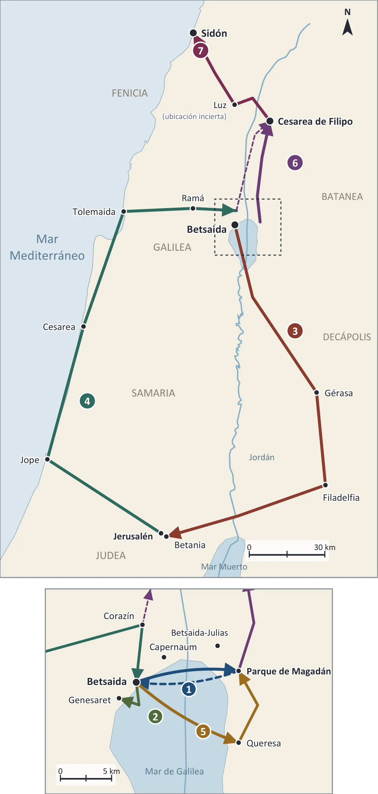
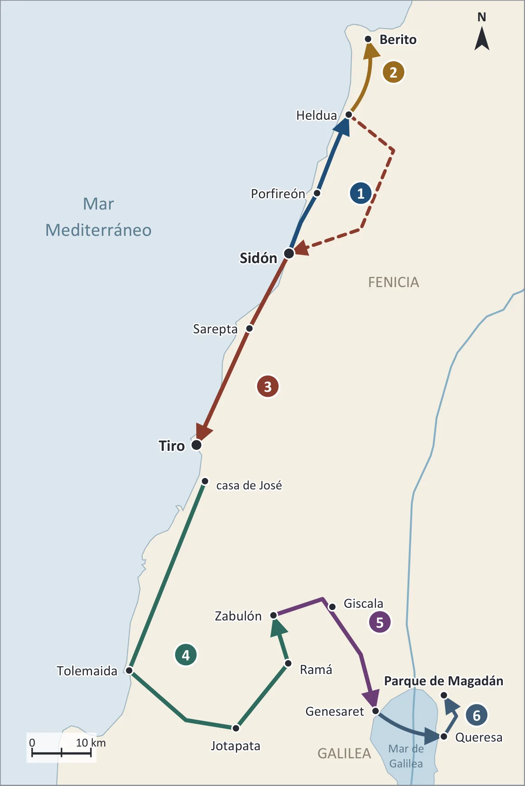
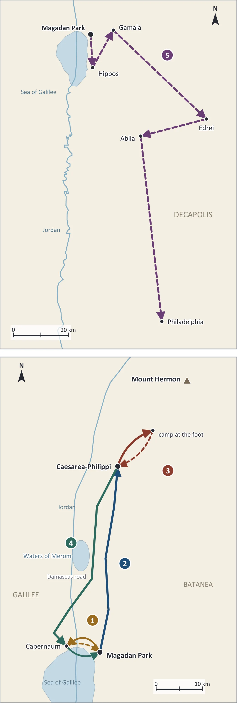
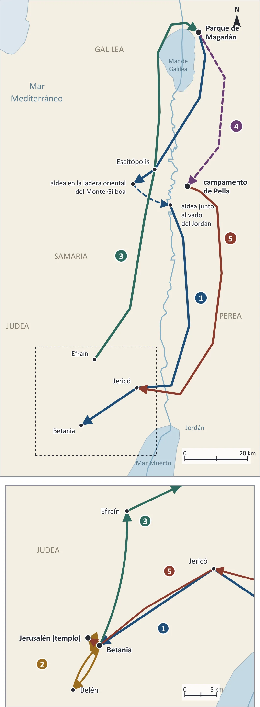
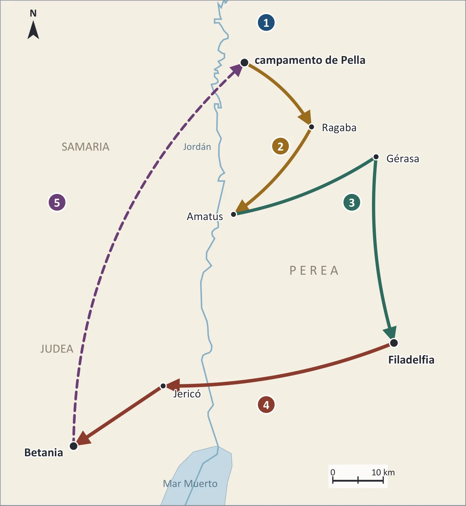
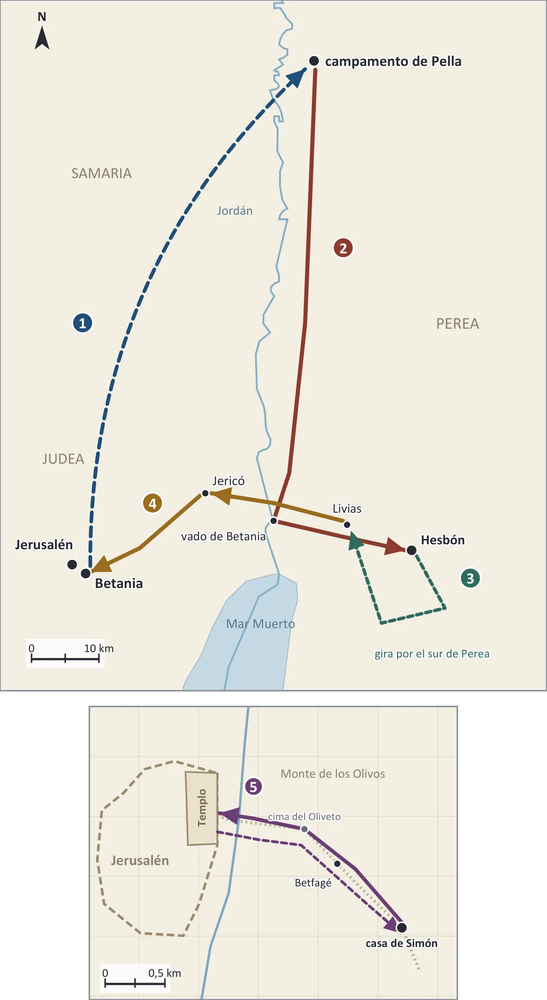

Parte V Los últimos meses del ministerio público
Documentos 152–170
Documento 152Los Acontecimientos que Condujeron a la Crisis de Capernaummarzo – abril de 29 d. de J.C.
| Acontecimiento | El libro de Urantia | Biblia |
|---|---|---|
| Camino de la casa de la hija de Jairo | 152:0.1–3 | Mt 9:1, 18-19; Mr 5:21-24; Lc 8:40-42 |
| Cuando la barca de Jesús regresó el martes por la mañana, una gran multitud lo estaba esperando, y Jairo, uno de los rectores de la sinagoga, cayó a sus pies rogándole que sanara a su hija única, que estaba a punto de morir. Mientras Jesús iba con él, la multitud lo siguió, y cerca de la casa una mujer tocó el borde de su manto.Difiere de la BibliaMateo dice que la hija acababa de morir, mientras que El libro de Urantia, al igual que Marcos y Lucas, dice que estaba a punto de morir, y añade que entre la multitud había nuevos observadores del sanedrín. | ||
| La mujer con flujo de sangre | 152:0.2–3 | Mt 9:20-22; Mr 5:25-34; Lc 8:43-48 |
| En una calle estrecha, camino de la casa de Jairo, una mujer que padecía desde hacía mucho tiempo de un flujo de sangre tocó el borde del manto de Jesús y quedó sana. Al percibir que había salido de él energía viva, Jesús la llamó y le dijo que su fe la había sanado; tocar el manto era sólo la parte supersticiosa, y la curación provenía de la fe.Difiere de la BibliaLos Evangelios describen a una mujer sin nombre enferma desde hacía doce años, mientras que El libro de Urantia la llama Verónica de Cesarea de Filipo y dice que Jesús no quiso conscientemente la curación y que tocar el manto fue una superstición de ella. | ||
| 1. En la Casa de Jairo | 152:1.1–5 | Mt 9:23-26; Mr 5:35-43; Lc 8:49-56 |
| En la casa de Jairo un criado dijo que la hija había muerto, pero Jesús entró con Pedro, Santiago, Juan y los padres, tomó a la niña de la mano y le mandó despertar y levantarse. Explicó que había estado en coma después de una larga fiebre y que no había sido resucitada de entre los muertos, pero los apóstoles no quisieron creerlo.Difiere de la BibliaLos Evangelios presentan a la niña como muerta y devuelta a la vida (Lucas dice que su espíritu volvió), mientras que El libro de Urantia dice que el mismo Jesús explicó que sólo la había despertado de un coma. | ||
| Dos ciegos y un muchacho mudo | 152:1.3 | Mt 9:27-34 |
| Al salir Jesús de la casa de Jairo, lo siguieron dos ciegos guiados por un muchacho mudo, pidiendo a gritos ser sanados. La fama de Jesús como sanador estaba entonces en su apogeo, y se le veía tan agotado que sus amigos temían que se desplomara.Difiere de la BibliaMateo dice que los dos ciegos recibieron la vista y que un endemoniado mudo habló, mientras que El libro de Urantia dice sólo que pedían a gritos ser sanados, no registra ninguna curación y hace del muchacho su guía. | ||
| Mapa 27Subida a Jerusalén y luego hacia el nortemarzo – junio de 29 d. de J.C. | ||
| 2. La Comida para Cinco MilMapa 27-① Al otro lado del lago; la alimentación de los cinco mil | 152:2.1–10 | Mt 14:13-21; Mr 6:30-44; Lc 9:10-17; Jn 6:1-13 |
| El domingo 27 de marzo, Jesús y los apóstoles cruzaron a los parques al sur de Betsaida-Julias para descansar, pero la gente los siguió, y el miércoles eran unos cinco mil. Con los cinco panes de cebada y los dos peces que tenía el mancebo Marcos, Jesús alimentó a la multitud, y con los pedazos sobrantes se llenaron doce cestas.Difiere de la BibliaLos Evangelios lo relatan como acontecimientos de un solo día, mientras que El libro de Urantia lo sitúa en el tercer día, con el trasfondo de un complot para hacer rey a Jesús, y lo llama su primer y único milagro de la naturaleza planeado conscientemente de antemano. | ||
| 3. El Episodio de la Coronación | 152:3.1–3 | Jn 6:14-15 |
| Cuando la multitud saciada gritó a una voz que querían hacerlo rey, Jesús se subió a una enorme piedra, declaró que su reino no es de este mundo y les dijo a todos que volvieran a sus casas. Muchos se fueron decepcionados, y Jesús le pidió a Andrés que orara por Pedro y se fue solo a las colinas.Difiere de la BibliaEl Evangelio de Juan dice que Jesús percibió su intención y se retiró silenciosamente a las colinas, mientras que El libro de Urantia dice que reprendió públicamente a la multitud y rechazó la realeza antes de irse a las colinas. | ||
| 4. La Visión Nocturna de Simón Pedro | 152:4.1–4 | Mt 14:22-33; Mr 6:45-52; Jn 6:16-21 |
| Mientras remaban esa noche sin su Maestro, Pedro, agotado, se quedó dormido y soñó que Jesús venía caminando sobre el agua y que él mismo caminaba sobre el agua y se hundía. En su sueño saltó realmente por la borda y despertó cuando Andrés, Santiago y Juan lo sacaban del agua, y siempre creyó que la experiencia había sido real.Difiere de la BibliaLos Evangelios dicen que Jesús caminó realmente sobre el agua, mientras que El libro de Urantia explica que fue el sueño y la visión de Pedro, y que Lucas lo consideró una visión y lo omitió de su relato. | ||
| 5. De Vuelta en BetsaidaMapa 27-② Descanso en la región de Genesaret | 152:5.1–6 | Ninguno |
| El jueves por la mañana Jesús, con el mancebo Marcos, regresó a pie a Betsaida. De los cinco mil sólo unos quinientos lo seguían todavía; Jesús reunió a los apóstoles y a las mujeres, los reprendió diciéndoles que los prodigios materiales no ganan almas, y luego fue a Genesaret a descansar. | ||
| 6. En Genesaret | 152:6.1–6 | Mt 14:34-36; Mr 6:53-55 |
| Mientras descansaba en la casa de un rico creyente de Genesaret, Jesús mantuvo conferencias con los apóstoles todas las tardes. Sus seguidores, más de cincuenta mil sólo en Galilea, se redujeron en menos de un mes a menos de quinientos, y él enseñó que las apelaciones a los sentimientos son transitorias y que sólo la apelación al espíritu interior da fruto.Difiere de la BibliaLos Evangelios dicen que en Genesaret los enfermos eran sanados al tocar su manto, mientras que El libro de Urantia dice sólo que descansó allí y enseñó a los apóstoles, sin relatar curaciones. | ||
| 7. En JerusalénMapa 27-③ Subida a Jerusalén para la PascuaMapa 27-④ Regreso por las ciudades de la costa | 152:7.1–3 | Ninguno |
| El domingo 3 de abril, Jesús partió sólo con los doce, por el camino de Gérasa y Filadelfia, y llegó a Betania el 6 de abril; prohibió la enseñanza pública durante la Pascua. Salieron de Jerusalén el 24 de abril, pasaron por las ciudades de la costa y regresaron a Betsaida el 29 de abril. | ||
Mapa 27Subida a Jerusalén y luego hacia el norte
marzo – junio de 29 d. de J.C. · Documentos 152–156

- ①Al otro lado del lago; la alimentación de los cinco milEl domingo 27 de marzo cruzaron a un parque al sur de Betsaida-Julias. Después de la alimentación de los cinco mil el miércoles, los apóstoles regresaron remando de noche y echaron ancla cerca de la casa de Zebedeo antes del amanecer del jueves (línea discontinua). [152:2.1–4; 152:4.1; 152:5.1]
- ②Descanso en la región de GenesaretFueron en barca a pasar dos o tres días de descanso en la casa de un rico creyente. [152:5.5; 152:6.1]
- ③Subida a Jerusalén para la PascuaEl domingo 3 de abril salieron de Betsaida por el camino de Gérasa y Filadelfia y llegaron a Betania tarde por la noche del miércoles 6 de abril. [152:7.1–2]
- ④Regreso por las ciudades de la costaEl domingo 24 de abril salieron de Jerusalén por el camino de Jope, Cesarea y Tolemaida, y luego por tierra por Ramá y Corazín hasta Betsaida, adonde llegaron el viernes 29 de abril. Al día siguiente él habló en la sinagoga de Capernaum. [152:7.3; 153:1.1]
- ⑤Huida del arresto, hasta cerca de QueresaEl domingo 22 de mayo por la mañana cruzaron remando hasta cerca de Queresa y pasaron la noche en el parque situado un poco al norte. [154:7.1–3; 155:0.1]
- ⑥Dos semanas en Cesarea de FilipoPartieron el lunes 23 de mayo por el camino del Jordán y llegaron el martes 24 de mayo. Pedro y los evangelistas pasaron dos semanas en Corazín antes de reunirse con ellos. [155:2.1–3]
- ⑦Por Luz a SidónPartieron el jueves 9 de junio, rodearon la región pantanosa por el camino de Luz y llegaron a Sidón el viernes por la tarde. [155:4.1; 156:0.1]
Documento 153La Crisis en Capernaumabril de 29 d. de J.C.
| Acontecimiento | El libro de Urantia | Biblia |
|---|---|---|
| (Introducción) | 153:0.1–3 | Ninguno |
| El viernes por la noche de su regreso a Betsaida y el sábado por la mañana, Jesús estaba sumido en sus pensamientos, comía poco y casi no hablaba. Cada apóstol conjeturaba con ansiedad lo que les esperaba, y Jesús salió de en medio de sus abatidos seguidores para predicar en la sinagoga de Capernaum. | ||
| 1. La Preparación del Escenario | 153:1.1–7 | Ninguno |
| A las tres de la tarde del sábado, en la nueva sinagoga de Capernaum había cincuenta y tres fariseos y saduceos de Jerusalén, más de treinta dirigentes de las sinagogas vecinas y los observadores de Herodes. La crisis iniciada con la alimentación de los cinco mil culminó con este sermón, punto decisivo de su popularidad, y Jairo cumplió su palabra de dejar hablar a Jesús. | ||
| 2. El Memorable Sermón | 153:2.1–13 | Jn 6:22-51 |
| Jesús leyó advertencias del Deuteronomio y de Jeremías y señaló que las multitudes lo habían seguido por el pan obtenido sin trabajar. Señalando la vasija de maná tallada en el dintel de la sinagoga, se declaró el pan de la vida, y cuando un instructor de Jerusalén preguntó si no era el hijo de José, respondió que él y el Padre son uno.Difiere de la BibliaEl Evangelio de Juan presenta un diálogo con la multitud en Capernaum, mientras que El libro de Urantia lo convierte en un sermón formal en la sinagoga ante representantes del sanedrín, que comienza con lecturas del Deuteronomio y de Jeremías. | ||
| 3. La Reunión Después del Sermón | 153:3.1–7 | Mt 15:1-20; Mr 7:1-23; Jn 6:52-71 |
| En la reunión posterior, que duró más de tres horas, un fariseo preguntó cómo podía Jesús dar a comer su carne, y un espía de Jerusalén le reprochó no lavarse las manos. Jesús los reprendió por invalidar el mandamiento de Dios mediante la tradición y declaró que lo que contamina al hombre es el mal que sale del corazón.Difiere de la BibliaLos Evangelios separan la disputa sobre el lavado de manos del discurso sobre el pan de la vida, mientras que El libro de Urantia dice que ambas cosas ocurrieron el mismo día, en la reunión posterior al sermón en la sinagoga de Capernaum. | ||
| «Danos a comer tu carne»: la carne y la sangre | 153:3.2 | Jn 6:52-71 |
| Un fariseo, subido a un candelabro, gritó que si Jesús era el pan de la vida, cómo podía darles a comer su carne y a beber su sangre. Jesús respondió que no les había enseñado a comer su carne y su sangre, sino que su vida en la carne era un autootorgamiento del pan del cielo y que los hombres podían llegar a ser espiritualmente uno con él.Difiere de la BibliaEl Evangelio de Juan dice que Jesús les mandó comer su carne y beber su sangre, mientras que en El libro de Urantia Jesús niega haber enseñado eso y lo explica como unidad espiritual. | ||
| Comer con las manos sin lavar | 153:3.3–6 | Mt 15:1-20; Mr 7:1-23 |
| Cuando un espía de Jerusalén acusó a Jesús y a sus apóstoles de comer con las manos sin lavar, Jesús reprendió la hipocresía de eludir mediante la tradición el mandamiento de honrar a los padres. Lo que contamina al hombre, dijo, no es lo que entra en la boca sino los malos pensamientos, la envidia, el orgullo y la calumnia que salen del corazón.Difiere de la BibliaLos Evangelios hacen de esto un encuentro aparte con fariseos venidos de Jerusalén y mencionan el corbán, mientras que en El libro de Urantia es un espía quien pregunta en la reunión posterior, y se añade que Pedro superó más tarde su temor a la impureza gracias a un sueño. | ||
| 4. Las Últimas Palabras en la Sinagoga | 153:4.1–6 | Mt 12:22-45; Mr 3:20-30; Lc 11:14-23 |
| En la reunión posterior Jesús expulsó un espíritu maligno de un joven traído por un fariseo de Jerusalén, y los fariseos lo acusaron de hacerlo por el poder de Beelzebú. Jesús respondió que un reino dividido contra sí mismo no puede subsistir, advirtió del pecado de blasfemar a sabiendas contra Dios y rechazó su exigencia de una señal predeterminada.Difiere de la BibliaLos Evangelios dan la señal de Jonás y el dicho del espíritu que vuelve con otros siete, mientras que El libro de Urantia dice sólo que no se daría ninguna señal salvo lo que verían cuando el Hijo del Hombre partiera. Marcos añade que su familia vino a prenderlo. | ||
| La curación del joven perturbado | 153:4.1–3 | Mt 12:22-45; Mr 3:20-30; Lc 11:14-23 |
| Un fariseo de Jerusalén trajo a un joven poseído por un espíritu desobediente y rebelde y preguntó si Jesús podía echar fuera demonios; Jesús ordenó al espíritu que saliera y puso a un espíritu leal a custodiar al joven. Fue el primer caso en que Jesús expulsó un verdadero espíritu maligno, y tal posesión existió sólo hasta Pentecostés.Difiere de la BibliaLos Evangelios describen a un endemoniado ciego y mudo (Lucas, mudo), mientras que El libro de Urantia dice que era un joven con un espíritu rebelde y que fue el primer caso de verdadera posesión demoníaca. | ||
| 5. El Sábado por la Tarde | 153:5.1–5 | Ninguno |
| De vuelta en Betsaida, Jesús no comió nada y se quedó solo en una habitación del piso alto, y Joab informó que aproximadamente un tercio de los evangelistas habían desertado. Pasada la medianoche, Jesús preguntó a unos treinta seguidores si ellos también querían irse, y Pedro dijo que el Maestro les había enseñado las palabras de vida eterna y que nunca lo abandonarían. | ||
Documento 154Los Últimos Días en Capernaumabril – mayo de 29 d. de J.C.
| Acontecimiento | El libro de Urantia | Biblia |
|---|---|---|
| (Introducción) | 154:0.1–3 | Ninguno |
| El sábado 30 de abril por la noche, en Tiberias, los comisionados del sanedrín presionaron a Herodes Antipas para que arrestara a Jesús. Herodes se negó, confiando en el informe de Chuza y movido por un temor supersticioso a causa de Juan el Bautista, y cuando lo amenazaron con denunciarlo ante el César, los expulsó de su sala de consejo. | ||
| 1. Una Semana de Asesoría | 154:1.1–3 | Ninguno |
| Del 1 al 7 de mayo Jesús celebró consultas mañana, tarde y noche en la casa de Zebedeo con unos cien discípulos probados. El viernes se cerró la sinagoga de Capernaum a Jesús y a sus seguidores, y Jairo renunció como rector principal; a la última reunión junto al lago, el 7 de mayo, asistieron menos de ciento cincuenta personas. | ||
| 2. Una Semana de Descanso | 154:2.1–5 | Ninguno |
| El 8 de mayo el sanedrín decretó el cierre de todas las sinagogas de Palestina a Jesús y a sus seguidores, y sólo la sinagoga de Hebrón se negó. Jesús declaró una semana de vacaciones y fue a pescar con David Zebedeo, y cuidó personalmente, sin milagro alguno, a Natanael y a Santiago Zebedeo durante una dolorosa enfermedad digestiva. | ||
| 3. La Segunda Reunión en Tiberias | 154:3.1–2 | Ninguno |
| En la segunda reunión de Tiberias, el 16 de mayo, Herodes volvió a negarse a arrestar a Jesús, pero el 18 de mayo aceptó el plan del sanedrín, a condición de que los gobernantes romanos dieran su consentimiento. Cuando llegó la noticia de ese consentimiento la noche del 21 de mayo, Herodes firmó el decreto que autorizaba el arresto de Jesús poco antes de la medianoche. | ||
| 4. El Sábado por la Noche en Capernaum | 154:4.1–6 | Ninguno |
| Esa misma noche del sábado, cincuenta ciudadanos destacados de Capernaum se reunieron en la sinagoga y debatieron hasta pasada la medianoche qué hacer con Jesús. Salvo unos pocos, se dividieron en cuatro grupos, que lo consideraban un fanático inofensivo, un agitador peligroso, un aliado de los diablos o un hombre fuera de sí. | ||
| 5. El Memorable Domingo por la Mañana | 154:5.1–4 | Ninguno |
| Antes del amanecer del domingo 22 de mayo, uno de los mensajeros de David trajo la noticia de que Herodes había autorizado el arresto de Jesús, y David convocó una reunión de emergencia para las siete. Jesús dio a sus discípulos las instrucciones de despedida, decidió llevar consigo a los doce apóstoles y a doce evangelistas, y hacia las siete y media comenzó su discurso de despedida a casi cien creyentes. | ||
| 6. Llega la Familia de Jesús | 154:6.1–12 | Mt 12:46-50; Mr 3:31-35; Lc 8:19-21 |
| Hacia las ocho, María, con Santiago, José, Judá y Ruth, llegó a la casa de Zebedeo para llevarse a Jesús a casa. Cuando le pasaron el mensaje, Jesús dijo que los que hacen la voluntad de su Padre son su madre y sus hermanos, y María se desplomó. Con la noticia de que venían los agentes a arrestarlo, Jesús tuvo que partir sin ver a su familia.Difiere de la BibliaLos Evangelios lo relatan brevemente, mientras que El libro de Urantia añade que los fariseos habían incitado a la familia, que María se desplomó al oír sus palabras y que Jesús tenía la intención de verlos, pero la huida apresurada se lo impidió. | ||
| 7. La Apresurada HuidaMapa 27-⑤ Huida del arresto, hasta cerca de Queresa | 154:7.1–5 | Ninguno |
| Hacia las ocho y media de la mañana del 22 de mayo, Jesús huyó en barca con los doce apóstoles y los doce evangelistas a la orilla oriental del mar de Galilea, seguido por seis de los mensajeros de David. Al dejar la barca cerca de Queresa, comenzaron las andanzas de su último año, dirigiéndose por Cesarea de Filipo hacia la costa de Fenicia. | ||
Documento 155La Huida por la Galilea del Nortemayo – junio de 29 d. de J.C.
| Acontecimiento | El libro de Urantia | Biblia |
|---|---|---|
| (Introducción) | 155:0.1 | Ninguno |
| Después de desembarcar cerca de Queresa el domingo 22 de mayo, Jesús y los veinticuatro fueron un poco hacia el norte y pasaron la noche en un parque conocido al sur de Betsaida-Julias. Antes de retirarse a descansar, el Maestro conversó con ellos sobre el plan de atravesar Batanea y el norte de Galilea hasta la costa fenicia. | ||
| 1. ¿Por Qué Se Amotinan los Paganos? | 155:1.1–6 | Ninguno |
| Esa noche Jesús citó el salmo que pregunta por qué se amotinan los paganos, pero corrigió sus imágenes de ira y de vara de hierro por ser impropias de su reino. Los paganos concentran sus energías en sus metas mientras los discípulos vacilan, dijo, y los exhortó a abandonar los anhelos vanos y a edificar el reino mediante vidas coordinadas por la verdad. | ||
| 2. Los Evangelistas en CorazínMapa 27-⑥ Dos semanas en Cesarea de Filipo | 155:2.1–3 | Ninguno |
| El lunes 23 de mayo Pedro fue con los doce evangelistas a Corazín, donde predicaron durante dos semanas pero ganaron pocos conversos, un bautismo de adversidad. Jesús fue con los once a Cesarea de Filipo, y cuando el grupo de Pedro se les unió el 8 de junio, se valió de la parábola del sembrador para enseñar el significado del fracaso aparente. | ||
| 3. En Cesarea de Filipo | 155:3.1–8 | Mt 16:13-19, 24 |
| Durante dos semanas cerca de Cesarea de Filipo, Jesús no hizo ninguna labor pública, pero conversó a diario con los apóstoles. Enseñó que la verdad cristalizada en un credo pierde su vida, que la verdadera religión es la lealtad a las más altas convicciones propias, y advirtió del peligro de aceptar símbolos y ceremonias en lugar de la experiencia religiosa.Difiere de la BibliaLos Evangelios sitúan en Cesarea de Filipo la confesión de Pedro y los dichos sobre la iglesia y las llaves, mientras que en El libro de Urantia esta estadía comprende sólo conversaciones tranquilas y enseñanza; la confesión de Pedro viene más tarde (157:3). | ||
| 4. En el Camino a FeniciaMapa 27-⑦ Por Luz a Sidón | 155:4.1–2 | Ninguno |
| El jueves 9 de junio, los veinticinco salieron de Cesarea de Filipo y, por el camino de Luz, llegaron a Sidón el viernes por la tarde. Mientras almorzaban a la sombra de una cornisa rocosa cerca de Luz, Pedro preguntó por qué huían de sus enemigos, y Tomás preguntó en qué se diferenciaba su religión de la de sus enemigos de Jerusalén. | ||
| 5. El Discurso Sobre la Verdadera Religión | 155:5.1–16 | Ninguno |
| Después del almuerzo, Jesús distinguió la religión primitiva, la religión del temor; la religión de la mente, basada en la autoridad tradicional; y la religión del espíritu, basada en la experiencia personal. A diferencia de la religión de autoridad de los dirigentes de Jerusalén, la religión del espíritu exige esfuerzo y la aventura de la fe, y envió a los veinticuatro a buscar su respuesta a solas con el Padre. | ||
| 6. El Segundo Discurso Sobre la Religión | 155:6.1–19 | Ninguno |
| Hacia las tres, a la sombra de una ladera, Jesús, a petición de Pedro, enseñó más sobre la religión del espíritu. Las religiones de autoridad dividen a los hombres, pero la religión del espíritu los une en la experiencia en medio de la diversidad de creencias; las pruebas de conocer a Dios son los frutos del espíritu en la vida diaria y una vida arriesgada por completo a la supervivencia. | ||
Documento 156La Estadía en Tiro y Sidónjunio – julio de 29 d. de J.C.
| Acontecimiento | El libro de Urantia | Biblia |
|---|---|---|
| (Introducción) | 156:0.1–2 | Ninguno |
| El viernes 10 de junio por la tarde, Jesús y su grupo llegaron a las inmediaciones de Sidón y se alojaron en la casa de una mujer acomodada que había sido paciente en el hospital de Betsaida. Pasaron unas dos semanas y media en la región de Sidón, y en el tranquilo sábado meditaron sobre los discursos acerca de la religión que habían oído en el camino. | ||
| 1. La Mujer Siria | 156:1.1–8 | Mt 15:21-28; Mr 7:24-30 |
| El sábado por la tarde Norana, una mujer siria, llevó a su hija de doce años, afligida por un grave trastorno nervioso con convulsiones, a la casa de Karuska. Pedro y Tomás intentaron despedirla, y cuando Simón el Zelote dijo que no se debe echar el pan de los hijos a los perros, ella insistió, hablando de las migajas. Jesús salió, elogió su fe y sanó a la niña.Difiere de la BibliaLos Evangelios ponen en boca del propio Jesús que no se debe dar el pan de los hijos a los perros, mientras que El libro de Urantia atribuye la observación a Simón el Zelote, que Jesús oye a través de una ventana, y describe un trastorno nervioso. | ||
| 2. La Enseñanza en Sidón | 156:2.1–8 | Ninguno |
| Al entrar en Sidón, Jesús dijo que este mundo es sólo un puente sobre el cual no se debe construir una morada. Alojado en la casa de Justa, enseñaba a los veinticuatro cada mañana, y ellos predicaban en Sidón por las tardes y las noches, ganando a muchos gentiles. Enseñó la progresión espiritual y disfrutó del agudo sentido del humor de los gentiles. | ||
| Mapa 28De Sidón a lo largo de la costa, y al parque de Magadánjunio – agosto de 29 d. de J.C. | ||
| 3. El Viaje Costa ArribaMapa 28-① De Sidón a Porfireón y HelduaMapa 28-② Jesús solo en BeritoMapa 28-③ De vuelta a Sidón, y luego a Tiro | 156:3.1–2 | Ninguno |
| El 28 de junio el grupo salió de Sidón y enseñó durante una semana a lo largo de la costa en Porfireón y Heldua, mientras Jesús fue a Berito a visitar a un sirio llamado Malac. Regresaron a Sidón el 6 de julio, pasaron por Sarepta y llegaron a Tiro el 11 de julio. | ||
| 4. En Tiro | 156:4.1–3 | Ninguno |
| Del 11 al 24 de julio los apóstoles y los evangelistas enseñaron de dos en dos en Tiro y sus alrededores, mientras Jesús tenía su centro de operaciones en la casa de José, al sur de la ciudad. Cuando Jesús habló una vez, la tarde del 20 de julio, se le abrió el templo de Melcart, y creyeron muchos de los dirigentes de la industria de la púrpura de Tiro. | ||
| 5. La Enseñanza de Jesús en Tiro | 156:5.1–23 | Ninguno |
| En Tiro Jesús enseñó los fundamentos del carácter espiritual mediante la historia del lirio blanco y su primera y única parábola sobre la carpintería. Cuando Natanael le preguntó por la oración de no ser llevados a la tentación, respondió que la tentación no viene de Dios sino del egoísmo y que debe vencerse mediante un nuevo afecto espiritual. Antes de partir envió a los doce evangelistas a sus casas por otro camino. | ||
| 6. El Regreso de FeniciaMapa 28-④ Tolemaida, Jotapata, Ramá y ZabulónMapa 28-⑤ Cerca de Giscala, y luego a GenesaretMapa 28-⑥ Por Queresa al parque de Magadán | 156:6.1–10 | Ninguno |
| El 24 de julio Jesús y los doce viajaron por Tolemaida, Jotapata, Ramá y Zabulón hasta Genesaret, donde se encontraron con David Zebedeo, y luego deliberaron cerca de Queresa con unos cincuenta dirigentes que quedaban. La oposición había amainado, y Felipe y Herodes Antipas mandaron decir que no interferirían con Jesús fuera de Galilea. | ||
Mapa 28De Sidón a lo largo de la costa, y al parque de Magadán
junio – agosto de 29 d. de J.C. · Documentos 156–157

- ①De Sidón a Porfireón y HelduaEl martes 28 de junio salieron de Sidón, subiendo por la costa. Durante una semana los apóstoles predicaron en Porfireón y los evangelistas enseñaron en Heldua. [156:3.1]
- ②Jesús solo en BeritoMientras tanto, durante tres o cuatro días, Jesús visitó la ciudad costera de Berito, donde conversó con un sirio llamado Malac. [156:3.1]
- ③De vuelta a Sidón, y luego a TiroEl miércoles 6 de julio regresaron todos a Sidón y permanecieron en la casa de Justa (línea discontinua). El domingo por la mañana partieron hacia el sur por el camino de Sarepta, llegaron a Tiro el lunes 11 de julio y enseñaron allí hasta el 24 de julio. Jesús tuvo su centro de operaciones en la casa de José, al sur de Tiro. [156:3.2; 156:4.1]
- ④Tolemaida, Jotapata, Ramá y ZabulónHacia el mediodía del domingo 24 de julio salieron de la casa de José y permanecieron un día en Tolemaida. El martes se dirigieron tierra adentro por el camino de Tiberias hasta cerca de Jotapata; el jueves, por el camino de Nazaret–Monte Líbano, fueron a Ramá, donde se quedaron el sábado, y llegaron a Zabulón el domingo 31. [156:6.1–2]
- ⑤Cerca de Giscala, y luego a GenesaretAl salir de Zabulón, viajaron hasta el cruce con el camino de Magdala a Sidón cerca de Giscala, y de allí a Genesaret, en la orilla occidental al sur de Capernaum, para encontrarse con David Zebedeo. [156:6.3]
- ⑥Por Queresa al parque de MagadánEsa misma noche una barca los llevó hasta cerca de Queresa. Después de un día de descanso en las colinas, siguieron hasta el parque donde se había alimentado a los cinco mil y celebraron allí conferencias durante tres días. [156:6.4; 157:2.1]
Documento 157En Cesarea de Filipoagosto de 29 d. de J.C.
| Acontecimiento | El libro de Urantia | Biblia |
|---|---|---|
| Mapa 29La transfiguración en el Monte Hermón y la gira por la Decápolisagosto – septiembre de 29 d. de J.C. | ||
| (Introducción)Mapa 29-① Cruce a Capernaum | 157:0.1–2 | Ninguno |
| Jesús concertó un encuentro con toda su familia de Nazaret para el domingo 7 de agosto en el taller de barcas de Zebedeo en Capernaum. Pero unos fariseos de Jerusalén estaban apostados a la puerta de la casa de María, vigilándola, de modo que la familia no pudo salir; Jesús renunció a la visita, y una vez más no lograron encontrarse. | ||
| 1. El Recolector de Impuestos del Templo | 157:1.1–5 | Mt 17:24-27 |
| Junto al lago, cerca del taller de barcas, un recolector del impuesto del templo preguntó a Pedro si Jesús pagaba el impuesto del templo, y Pedro le aseguró precipitadamente que sí. Como no tenían dinero, Jesús le dijo que pescara y vendiera los peces para pagar el impuesto por los tres, y un mensajero de David y su amigo pescador le entregaron a Pedro cestas de pescado, de modo que se pagó el impuesto.Difiere de la BibliaMateo relata el milagro de un siclo hallado en la boca de un pez, mientras que El libro de Urantia dice que el impuesto se pagó con la venta de pescado con ayuda del mensajero, y que la historia del siclo surgió de una observación medio humorística de Jesús. | ||
| 2. En Betsaida-Julias | 157:2.1–2 | Mt 15:39; 16:1-12; Mr 8:10-21 |
| El lunes 8 de agosto, más de cien creyentes, evangelistas, el cuerpo de mujeres y fariseos se reunieron en el parque de Magadán, cerca de Betsaida-Julias. Después de rechazar en la reunión pública la exigencia de una señal, Jesús celebró por la noche una conferencia en la que se decidió una misión conjunta a la Decápolis, y les advirtió que se guardaran de la levadura de los fariseos y de los saduceos.Difiere de la BibliaLos Evangelios sitúan la advertencia sobre la levadura en una conversación en la barca con discípulos que habían olvidado el pan, mientras que El libro de Urantia la presenta como una larga exhortación al cierre de la conferencia de la noche, sin mencionar el pan. | ||
| Los fariseos piden una señal de autoridadMapa 29-② A Cesarea de Filipo | 157:2.1–2 | Mt 15:39; 16:1-12; Mr 8:10-21 |
| En la reunión pública anterior a la conferencia privada, unos fariseos interrumpieron y perturbaron la reunión, y su jefe exigió una señal de la autoridad de Jesús para enseñar. Jesús respondió que sabían discernir el aspecto del cielo pero no las señales de los tiempos, y que no se daría ninguna señal a una generación hipócrita.Difiere de la BibliaMateo dice que no se dará ninguna señal salvo la señal de Jonás, mientras que El libro de Urantia no menciona a Jonás y añade que ya se ha dado una señal a los que quieran conocer la verdad. | ||
| 3. La Confesión de Pedro | 157:3.1–7 | Mt 16:13-17; Mr 8:27-30; Lc 9:18-21 |
| El martes, camino de Cesarea de Filipo, Jesús y los doce se sentaron a almorzar bajo unas moreras, y él preguntó por primera vez: «¿Quién dicen los hombres que soy yo?» Cuando les preguntó quién decían ellos que era, Simón Pedro exclamó que era el Liberador, el Hijo del Dios viviente, y los otros once se pusieron de pie en señal de acuerdo.Difiere de la BibliaLos Evangelios sitúan este episodio en la región de Cesarea de Filipo, mientras que El libro de Urantia lo sitúa durante el almuerzo en el camino hacia allí, pone en boca de Pedro «Liberador» en lugar de «Cristo» y dice que los once se pusieron de pie para unirse a la confesión. | ||
| 4. La Conversación Sobre el Reino | 157:4.1–8 | Mt 16:18-20 |
| Al mediodía del miércoles, en el jardín de Celsus, Jesús preguntó si los apóstoles seguían sosteniendo la declaración de Pedro, y Pedro afirmó de nuevo que era el Hijo de Dios. Jesús dijo que esta confesión era una revelación del espíritu de su Padre y que sobre esta roca edificaría la hermandad espiritual, y entregó a los apóstoles las llaves del reino exterior.Difiere de la BibliaMateo dice que Jesús dio personalmente a Pedro la roca y las llaves del reino para edificar la iglesia, mientras que El libro de Urantia dice que al día siguiente fundó la hermandad espiritual sobre la confesión de los doce, y que las llaves significaban autoridad sobre los asuntos sociales y económicos. | ||
| 5. El Nuevo Concepto | 157:5.1–3 | Ninguno |
| Lo nuevo de la confesión de Pedro fue el claro reconocimiento de la divinidad de Jesús como Hijo de Dios. Puesto que el concepto judío del Mesías no incluía la divinidad, Jesús renunció a intentar modificar ese concepto y decidió revelar su divinidad, edificando el reino sobre la naturaleza combinada del Hijo del Hombre y del Hijo de Dios. | ||
| 6. La Tarde Siguiente | 157:6.1–15 | Ninguno |
| Jesús y los apóstoles se quedaron un día más en la casa de Celsus, y esa noche llegaron los mensajeros de David Zebedeo con fondos. Con la confesión de Pedro, Jesús entró en la cuarta y última etapa de su vida en la tierra, y en el jardín hizo nuevas declaraciones sobre las obligaciones de la filiación, su unidad con el Padre y su próxima partida. | ||
| 7. Los Diálogos de Andrés | 157:7.1–5 | Ninguno |
| Esa noche Andrés habló en privado con cada uno de los apóstoles, excepto con Judas Iscariote, y, preocupado por la actitud de Judas, se lo contó a Jesús tarde esa noche. Jesús le dijo que siguiera confiando en Judas y que no dijera nada a nadie. El viernes 12 de agosto por la mañana, Jesús dijo a los apóstoles que se prepararan para ir al Monte Hermón. | ||
Mapa 29La transfiguración en el Monte Hermón y la gira por la Decápolis
agosto – septiembre de 29 d. de J.C. · Documentos 157–159

- ①Cruce a CapernaumEl domingo 7 de agosto, Jesús cruzó con Andrés y Pedro para encontrarse con su familia, pero el encuentro no se produjo. Se pagó el impuesto del templo, y al oscurecer regresaron remando hacia la orilla oriental (línea discontinua). [157:0.1–2; 157:1.1–5]
- ②A Cesarea de FilipoEl lunes 8 de agosto, conferencia en el parque; el martes temprano por la mañana partieron. Al pasar al sur de las Aguas de Merom, Jesús preguntó: «¿Quién dicen los hombres que soy yo?» Tarde esa noche llegaron a la casa de Celsus. [157:2.1; 157:3.1–7]
- ③La transfiguración en el Monte HermónCerca de la puesta del sol del viernes 12 de agosto, llegaron al pie del Monte Hermón. El lunes 15 de agosto, Jesús y tres apóstoles comenzaron la ascensión. El martes por la mañana bajaron al campamento; el muchacho afligido fue sanado, y pasaron la noche en casa de Celsus (línea discontinua). [158:0.1; 158:1.1; 158:4.1; 158:5.1; 158:6.1]
- ④Por Capernaum al parque de MagadánPartieron temprano el miércoles por la mañana y, justo pasadas las Aguas de Merom, tomaron el camino de Damasco hacia Capernaum. Al anochecer fueron a la casa de Simón Pedro, y luego cruzaron el lago hasta el parque de Magadán. [158:7.1; 158:7.9; 158:8.1; 159:0.1]
- ⑤La gira por la DecápolisEl jueves 18 de agosto, doce grupos salieron a laborar en Gérasa, Gamala, Hipos, Zafón, Gadara, Abila, Edrei, Filadelfia, Hesbón, Dium, Escitópolis y otras ciudades. Jesús visitó los grupos de Hipos, Gamala, Edrei, Abila y Filadelfia (los caminos no figuran en el texto; línea discontinua). El viernes 16 de septiembre, todos se reunieron de nuevo en el parque de Magadán. [159:0.2; 159:1.1; 159:2.1; 159:3.1; 159:4.1; 159:5.1; 159:6.2]
Documento 158El Monte de la Transfiguraciónagosto de 29 d. de J.C.
| Acontecimiento | El libro de Urantia | Biblia |
|---|---|---|
| (Introducción)Mapa 29-③ La transfiguración en el Monte Hermón | 158:0.1–2 | Ninguno |
| Cerca de la puesta del sol del viernes 12 de agosto de 29 d. de J.C., Jesús y los apóstoles llegaron al pie del Monte Hermón y pasaron dos días en preparación espiritual. Jesús deseaba que todos los apóstoles compartieran la experiencia en la montaña, pero como no podían alcanzar ese nivel, decidió llevar sólo a Pedro, Santiago y Juan, que solían acompañarlo en las vigilias nocturnas. | ||
| 1. La Transfiguración | 158:1.1–10 | Mt 17:1-8; Mr 9:2-8; Lc 9:28-36 |
| El lunes 15 de agosto, Jesús subió al Monte Hermón con los tres apóstoles y por la tarde se apartó solo para encontrarse con Gabriel y el Padre Melquisedek. Despertados por la noche, los apóstoles vieron a Jesús resplandeciente hablando con dos seres brillantes, y mientras Pedro proponía construir tres tiendas, una nube plateada los cubrió y una voz dijo: «Éste es mi Hijo amado».Difiere de la BibliaLos Evangelios dicen que aparecieron Moisés y Elías, mientras que El libro de Urantia dice que esos seres eran en realidad Gabriel y el Padre Melquisedek, y que Pedro supuso erróneamente que eran Moisés y Elías. | ||
| 2. El Descenso de la Montaña | 158:2.1–5 | Mt 17:9-13; Mr 9:9-13 |
| Al bajar de la montaña, Jesús les encargó que no contaran a nadie lo que habían visto hasta que el Hijo del Hombre hubiera resucitado de entre los muertos. Pedro cambió de tema preguntando si Elías debía venir primero, y Jesús respondió que Elías ya había venido pero no fue recibido; los tres entendieron que se refería a Juan el Bautista.Difiere de la BibliaLos Evangelios dicen que los discípulos preguntaron simplemente por Elías, mientras que El libro de Urantia explica que Pedro lo preguntó para desviar la conversación de la muerte y la resurrección de Jesús. | ||
| 3. El Significado de la Transfiguración | 158:3.1–6 | Ninguno |
| En la transfiguración, el Hijo Eterno, por medio de Gabriel, aceptó la plenitud del autootorgamiento de Micael, y el Espíritu Infinito, por medio del Padre Melquisedek, atestiguó su satisfacción. El Padre no indicó que el autootorgamiento hubiera terminado, sino que sólo dio testimonio por medio del Ajustador: «Éste es mi Hijo amado», y Jesús decidió proseguir el autootorgamiento mortal hasta su fin natural. | ||
| 4. El Muchacho Epiléptico | 158:4.1–8 | Mt 17:14-20; Mr 9:14-29; Lc 9:37-43 |
| El martes por la mañana Jesús llegó al campamento y encontró a los nueve apóstoles, a escribas de Jerusalén y a unas cincuenta personas más en plena disputa. El día anterior, Santiago de Safad había traído a su único hijo, de unos catorce años, afligido de epilepsia y poseído por un intermedio vagabundo; Simón el Zelote y luego Andrés habían intentado expulsar el espíritu y habían fracasado, mientras los escribas se burlaban de ellos.Difiere de la BibliaLos Evangelios dicen sólo que los discípulos no pudieron sanar al muchacho, mientras que El libro de Urantia precisa que los apóstoles habían estado discutiendo quién sería el mayor, y que Simón el Zelote lo intentó en nombre de Jesús, luego Andrés, y ambos fracasaron. | ||
| 5. Jesús Cura al Muchacho | 158:5.1–5 | Mt 17:14-20; Mr 9:14-29; Lc 9:37-43 |
| Cuando Jesús regresó, Santiago de Safad se arrodilló y le suplicó que sanara a su hijo. Jesús reprendió a la generación incrédula y dijo que todo es posible para el que cree de verdad, y cuando el padre le pidió ayuda para su incredulidad, Jesús tomó al muchacho de la mano y expulsó al espíritu, curando a la vez la epilepsia y la posesión.Difiere de la BibliaLos Evangelios lo presentan sólo como la expulsión de un demonio, mientras que El libro de Urantia lo llama una doble curación, de la epilepsia física y de un mal espiritual causado por la posesión de un intermedio, sin ningún dicho sobre la fe como un grano de mostaza ni sobre la oración. | ||
| 6. En el Jardín de Celsus | 158:6.1–6 | Ninguno |
| Esa noche, en la casa de Celsus, Tomás pidió a Jesús que explicara la derrota de los apóstoles. Jesús señaló que habían cedido a la tentación de buscar altos puestos en un reino material, de modo que sus motivos e ideales no eran espirituales, y declaró que el Hijo del Hombre sería muerto pero resucitaría. | ||
| 7. La Protesta de PedroMapa 29-④ Por Capernaum al parque de Magadán | 158:7.1–9 | Mt 16:21-28; Mr 8:31-38; 9:1; Lc 9:22-27 |
| El miércoles Jesús y los doce salieron de Cesarea de Filipo y atravesaron Galilea por el camino de Damasco hacia Capernaum. Cuando Andrés le preguntó por sus palabras sobre la muerte, Jesús reveló que sería rechazado y muerto en Jerusalén y que resucitaría; reprendió a Pedro, que protestaba, diciéndole «Vete detrás de mí», y enseñó que el que pierda su vida la salvará.Difiere de la BibliaLos Evangelios hacen que Jesús llame Satanás a Pedro y les mande tomar la cruz, mientras que en El libro de Urantia dice que todos ellos saborean el espíritu del adversario y les manda asumir cada día sus responsabilidades; ocurre en el camino de regreso de Cesarea de Filipo. | ||
| 8. En la Casa de Pedro | 158:8.1–2 | Mt 18:1-10; Mr 9:33-37, 42-47; Lc 9:46-48 |
| Al anochecer, en la casa de Simón Pedro en Capernaum, Jesús preguntó de qué habían hablado en el camino, y los apóstoles, que habían estado discutiendo quién sería el mayor, guardaron silencio. Poniendo en medio de ellos a uno de los pequeños de Pedro, Jesús enseñó que el que se humilla como este niño es el mayor, y luego cruzaron en barca a Magadán.Difiere de la BibliaMateo dice que los discípulos preguntaron primero quién es el mayor, mientras que El libro de Urantia, como Marcos, hace que Jesús pregunte primero, hace del niño uno de los de Pedro y habla de quedar excluido del reino en lugar del fuego del infierno. | ||
| El que haga tropezar a uno de estos pequeños | 158:8.1 | Lc 17:1-2 |
| En el mismo lugar Jesús advirtió que al que haga tropezar a uno de estos pequeños más le valdría ser arrojado al mar con una piedra de molino atada al cuello. Si las manos o los ojos son motivo de tropiezo en el progreso del reino, hay que sacrificar esos ídolos queridos, y los ángeles de los pequeños contemplan siempre los rostros de las huestes celestiales.Difiere de la BibliaLucas sitúa esta advertencia a los discípulos en otra ocasión, mientras que El libro de Urantia la presenta como parte de la enseñanza con el niño en la casa de Pedro en Capernaum. | ||
Documento 159La Gira por la Decápolisagosto – septiembre de 29 d. de J.C.
| Acontecimiento | El libro de Urantia | Biblia |
|---|---|---|
| Comienzo de la gira por la DecápolisMapa 29-⑤ La gira por la Decápolis | 159:0.1–2 | Mr 7:31 |
| En el parque de Magadán esperaban casi cien evangelistas y discípulos, entre ellos el cuerpo de mujeres. El jueves 18 de agosto, Jesús emparejó a cada apóstol con un evangelista y los envió en doce grupos a trabajar durante cuatro semanas en las ciudades de la Decápolis, como Gérasa, Gamala e Hipos, para regresar a más tardar el 16 de septiembre.Difiere de la BibliaMarcos dice sólo que Jesús pasó por la Decápolis, mientras que El libro de Urantia describe una misión organizada de cuatro semanas por doce grupos en muchas ciudades, durante la cual no se realizó ningún milagro. | ||
| 1. El Sermón del Perdón | 159:1.1–7 | Mt 18:12-35; Lc 15:3-7 |
| Una noche en Hipos, respondiendo a la pregunta de un discípulo, Jesús enseñó sobre el perdón. Puesto que el Padre sale a buscar a los pecadores aun antes de que piensen en arrepentirse, sus hijos deben perdonarse unos a otros; cuando Pedro preguntó cuántas veces había que perdonar, Jesús respondió con la parábola del mayordomo que, perdonada su deuda, encarceló a su compañero.Difiere de la BibliaMateo sitúa esta enseñanza en una conversación con los discípulos en el período de Capernaum, mientras que El libro de Urantia la sitúa en un discurso nocturno en Hipos durante la misión en la Decápolis. | ||
| Las cien ovejas y la que se extravía | 159:1.2 | Mt 18:12-14; Lc 15:3-7 |
| Jesús habló del pastor que deja las noventa y nueve para buscar la oveja perdida hasta encontrarla y la lleva a casa con regocijo, diciendo que hay más alegría en el cielo por un pecador que se arrepiente. En el evangelio del reino, enseñó, el Padre sale a buscar a los pecadores aun antes de que piensen en el arrepentimiento.Difiere de la BibliaLo que no se encuentra en la Biblia: El libro de Urantia añade que Dios no sólo recibe a los arrepentidos, sino que sale a buscarlos antes incluso de que piensen en arrepentirse. | ||
| Si tu hermano peca contra ti | 159:1.3 | Mt 18:15-20 |
| Jesús dijo que si un hermano peca, hay que ir primero a él a solas, luego con uno o dos amigos, y si aún no escucha, decirlo a la hermandad para que ésta actúe. La hermandad no puede juzgar las almas ni perdonar los pecados, pero puede decidir cuestiones de orden temporal y de disciplina, y él estaría presente dondequiera que se reunieran dos o tres creyentes.Difiere de la BibliaMateo extiende el poder de la iglesia de atar y desatar a todo lo que ella decida, mientras que El libro de Urantia deja claro que ese poder excluye juzgar las almas y perdonar los pecados, y que se limita a la disciplina temporal de la hermandad. | ||
| El mayordomo que debía cien denarios | 159:1.4–5 | Mt 18:21-35 |
| Simón Pedro, encargado de los obreros en Hipos, preguntó si había que perdonar siete veces, y Jesús respondió: setenta veces siete. En la parábola, un mayordomo principal al que se le perdonaron diez mil talentos encarceló a un compañero mayordomo que le debía cien denarios, por lo que el rey lo entregó a los carceleros; Jesús enseñó que la misericordia debe darse libremente.Difiere de la BibliaEl argumento de la parábola es el mismo, pero Mateo termina con la advertencia de que el Padre hará lo mismo con quienes no perdonan, mientras que El libro de Urantia termina diciendo que una misericordia más abundante espera a los que muestran misericordia. | ||
| 2. El Extraño Predicador | 159:2.1–4 | Mr 9:38-41; Lc 9:49-50 |
| Jesús fue a Gamala a visitar a Juan y a sus asociados. Cuando Juan dijo que había prohibido a un hombre en Astarot enseñar y echar fuera diablos en nombre de Jesús, Jesús le dijo que no se lo prohibiera, porque el que no está contra nosotros está a favor de nosotros. Ese hombre, Aden, siguió trabajando y reunió a muchos creyentes en Canata.Difiere de la BibliaLos Evangelios hablan brevemente de un hombre sin nombre, mientras que El libro de Urantia añade que era Aden, que llegó a creer por el testimonio del lunático de Queresa, hizo caso omiso de la prohibición y reunió creyentes en Canata. | ||
| 3. La Instrucción para Maestros y Creyentes | 159:3.1–14 | Ninguno |
| En Edrei Jesús pasó un día y una noche con Tomás y sus asociados, enseñando los principios para quienes predican la verdad. Deben respetar la personalidad y el respeto de sí mismo de los demás, no asustar nunca a la gente para que entre en el reino ni depender de apelaciones emocionales, no confundir los sentimientos intensos con la guía del espíritu, y saber que los creyentes no se libran de las dificultades, sino que las atravesarán con él. | ||
| 4. La Conversación con Natanael | 159:4.1–11 | Ninguno |
| En Abila, cuando Natanael le preguntó en privado sobre la verdad de las Escrituras, Jesús le respondió aparte. Las Escrituras son obra de hombres y son imperfectas, pero constituyen la mejor colección de sabiduría religiosa, y relatos como el mandato de matar a todos los enemigos no son la palabra de Dios. Sólo los Creadores poseen la infalibilidad, y la autoridad de la verdad es el espíritu viviente. | ||
| 5. La Naturaleza Positiva de la Religión de Jesús | 159:5.1–17 | Ninguno |
| En Filadelfia, cuando Santiago preguntó cómo elegir los mejores pasajes de las Escrituras, Jesús dio varios ejemplos. Infundió el espíritu de la acción positiva en las doctrinas pasivas de la religión judía, enseñando que poner la otra mejilla y andar la segunda milla son actos positivos de vencer el mal con el bien. | ||
| 6. El Retorno a Magadán | 159:6.1–5 | Ninguno |
| La misión de cuatro semanas en la Decápolis tuvo un éxito moderado, y cientos fueron recibidos en el reino. El viernes 16 de septiembre, todo el cuerpo se reunió en el parque de Magadán, y el sábado más de cien creyentes celebraron un consejo. Abner trasladó su base a Belén, y Jesús y sus asociados se prepararon para una última semana de descanso. | ||
Documento 160Rodán de Alejandríaseptiembre de 29 d. de J.C.
| Acontecimiento | El libro de Urantia | Biblia |
|---|---|---|
| (Introducción) | 160:0.1 | Ninguno |
| El domingo 18 de septiembre, Andrés anunció que no había trabajo previsto para esa semana, y todos los apóstoles, excepto Natanael y Tomás, se fueron a sus casas. Jesús descansó casi por completo, dejando a Natanael y a Tomás conversar con Rodán, un filósofo griego de Alejandría que había venido a Magadán, escuchándolo y enseñándole el evangelio. | ||
| 1. La Filosofía Griega de Rodán | 160:1.1–15 | Ninguno |
| A partir del lunes, Rodán pronunció diez discursos ante Natanael, Tomás y unas dos docenas de creyentes. La vida humana consiste en impulsos, deseos y atractivos, dijo, y la madurez consiste en convertirlos en ideales más elevados; el mejor método para resolver problemas que había aprendido de Jesús es el aislamiento de la meditación adoradora. | ||
| 2. El Arte de Vivir | 160:2.1–10 | Ninguno |
| Rodán enseñó que los seres humanos construyen la personalidad y la cultura comunicando significados y valores mediante símbolos. Las asociaciones de amistad y afecto mutuo, sobre todo el matrimonio, son centrales en el arte de vivir, pues fomentan la expresión de sí mismo y la comprensión, la unión de las almas, el entusiasmo por vivir y la defensa contra el mal. | ||
| 3. Los Alicientes de la Madurez | 160:3.1–5 | Ninguno |
| Rodán dijo que la energía necesaria para la madurez no proviene de la excitación emocional sino de la adoración, que une la meditación y el reposo en la comunión espiritual. Cuando esa práctica se convierte en hábito forma el carácter espiritual, y el modo del Maestro de hallar con tacto y tolerancia la llave de una puerta cerrada es mejor que la lucha. | ||
| 4. El Equilibrio de la Madurez | 160:4.1–16 | Ninguno |
| Rodán dijo que, mientras se buscan las realidades eternas, hay que atender a las necesidades de la vida temporal: salud, pensamiento claro, capacidad y destreza, riqueza, capacidad para resistir la derrota y cultura. Hay que aprender a fracasar con elegancia, y para el hombre que busca a Dios el fracaso es simplemente un episodio educativo en la adquisición de la sabiduría. | ||
| 5. La Religión del Ideal | 160:5.1–14 | Ninguno |
| Rodán definió la religión como la experiencia de reaccionar ante lo que es digno de la devoción de toda la humanidad, sosteniendo que la verdadera religión se basa en la experiencia espiritual y no puede existir sin el ideal supremo del Dios eterno. Profesando la religión de Jesús como el concepto más elevado de la religión, declaró que él también se había embarcado en esta aventura eterna. | ||
Documento 161Las Conversaciones Ulteriores con Rodánseptiembre de 29 d. de J.C.
| Acontecimiento | El libro de Urantia | Biblia |
|---|---|---|
| Mapa 30Traslado del centro de operaciones a Pella, y visitas a Jerusalénseptiembre – diciembre de 29 d. de J.C. | ||
| (Introducción)Mapa 30-① Subida a Jerusalén para la fiesta de los tabernáculos | 161:0.1–2 | Ninguno |
| El domingo 25 de septiembre de 29 d. de J.C., en Magadán, Jesús anunció que al día siguiente él y los doce apóstoles partirían hacia Jerusalén para asistir a la fiesta de los tabernáculos. Mandó a los evangelistas visitar a los creyentes de Galilea y al cuerpo de mujeres regresar a Betsaida, mientras Natanael y Tomás se quedaban algunos días en Magadán para continuar sus conversaciones con Rodán. | ||
| 1. La Personalidad de Dios | 161:1.1–11 | Ninguno |
| Rodán sostenía que la personalidad requiere comunicación entre iguales, de modo que Dios, al no tener igual, no puede ser una persona. Para el martes por la noche, Natanael lo convenció con argumentos como la comunicación del Padre con el Hijo Eterno y el Espíritu Infinito, y la comunicación de Jesús tanto con el Padre como con los hombres, y Rodán confesó que Dios es una persona. | ||
| 2. La Naturaleza Divina de Jesús | 161:2.1–12 | Ninguno |
| Natanael y Tomás explicaron a Rodán la naturaleza divina de Jesús. Señalando su amistad intachable y su vida sin pecado, su perfecto control emocional, su conocimiento sobrehumano, su autoridad como maestro divino, su afirmación de ser uno con el Padre y su oración como cara a cara, dijeron que era a la vez Hijo del Hombre e Hijo de Dios. Rodán dio más tarde su vida en Grecia. | ||
| 3. Las Mentes Humana y Divina de Jesús | 161:3.1–3 | Ninguno |
| La conciencia de divinidad de Jesús creció gradualmente hasta su bautismo, después del cual parece haber podido elegir entre depender sólo de su mente humana o usar también el conocimiento de la mente divina. A menudo ocultaba a sus asociados su presciencia y su discernimiento de los pensamientos, y los redactores no pueden distinguir plenamente estas dos técnicas ni todo el misterio. | ||
Mapa 30Traslado del centro de operaciones a Pella, y visitas a Jerusalén
septiembre – diciembre de 29 d. de J.C. · Documentos 161–164

- ①Subida a Jerusalén para la fiesta de los tabernáculosSe anunció el domingo 25 de septiembre; partieron temprano al día siguiente. Bajaron por la orilla oriental del lago y por Escitópolis entraron en los límites de Samaria. Al negárseles alojamiento en una aldea de las laderas orientales del Monte Gilboa, pasaron la noche en la aldea cercana al vado del Jordán. Temprano al día siguiente cruzaron el río y siguieron por la carretera del este del Jordán, llegando a Betania tarde el miércoles por la noche. [161:0.1; 162:0.1–3]
- ②Enseñanza en el templo; Abner en BelénDurante la fiesta Jesús enseñó públicamente en el templo en varias ocasiones. Repartió su tiempo casi por igual entre Betania y Belén, donde Abner tenía su centro de operaciones. [162:1.2; 162:2.10; 162:9.1–4]
- ③De Efraín al parque de MagadánA fines de octubre se retiraron de las cercanías de Jerusalén y descansaron unos días en Efraín. Partieron el domingo 30 de octubre por la carretera del oeste del Jordán y llegaron tarde el miércoles 2 de noviembre. El 19 de noviembre fueron ordenados los setenta. [162:9.6; 163:1.1]
- ④Traslado del centro de operaciones al campamento de PellaEl martes 6 de diciembre, casi trescientas personas partieron al amanecer para alojarse esa noche cerca de Pella, junto al río, al lado del manantial donde Juan el Bautista había acampado en otro tiempo (la ruta no figura en el texto; línea discontinua). [163:5.1]
- ⑤En secreto a Jerusalén para la fiesta de la consagraciónCon Natanael y Tomás, Jesús cruzó el Jordán por el vado de Betania y se alojó en Jericó. El viernes por la noche se reunió con dirigentes en la casa de Nicodemo; el sábado por la mañana, después de desayunar en Betania, sanó cerca del templo a Josías, ciego de nacimiento. Con Josías regresó a Pella. [164:0.1–2; 164:2.1; 164:3.1; 164:5.6]
Documento 162En la Fiesta de los Tabernáculosoctubre de 29 d. de J.C.
| Acontecimiento | El libro de Urantia | Biblia |
|---|---|---|
| Santiago y Juan querían hacer descender fuego | 162:0.1–4 | Lc 9:51-56 |
| Jesús y los diez apóstoles planeaban ir a Jerusalén pasando por Samaria, pero una aldea de las laderas orientales del Monte Gilboa les negó alojamiento porque eran judíos y expulsó a Felipe y a Mateo. Cuando Santiago y Juan pidieron hacer descender fuego del cielo, Jesús los reprendió severamente; se alojaron en una aldea junto al vado del Jordán y llegaron a Betania el miércoles.Difiere de la BibliaEl Evangelio de Lucas dice sólo que se enviaron mensajeros por delante, mientras que El libro de Urantia precisa que Felipe y Mateo hablaron con indignación del Santo de Israel y fueron expulsados con palos y piedras. | ||
| 1. Los Peligros de la Visita a JerusalénMapa 30-② Enseñanza en el templo; Abner en Belén | 162:1.1–11 | Ninguno |
| Ante la repentina decisión de asistir a la fiesta de los tabernáculos en Jerusalén, los apóstoles temieron por su vida, pero Jesús respondió que la hora había llegado. Gracias a la división dentro del sanedrín, a los esfuerzos de los asociados de Abner y a su propia audacia, pudo enseñar públicamente en los patios del templo, una proclamación abierta de su divinidad. | ||
| 2. El Primer Discurso en el Templo | 162:2.1–10 | Jn 7:1-36 |
| La primera tarde que Jesús enseñó en el templo, cuando le preguntaron cómo podía enseñar sin haber estudiado con los rabinos, respondió que su enseñanza era la de Aquel que lo envió. Respondió también a por qué los dirigentes intentaban matarlo y a si él era el Mesías, y Eber, el oficial del sanedrín enviado a arrestarlo, quedó tan conmovido que se negó a hacerlo.Difiere de la BibliaEl Evangelio de Juan dice que Jesús subió en secreto después de que sus hermanos lo instaran, mientras que El libro de Urantia dice que fue con los apóstoles, da el nombre de Eber al oficial que vino a arrestarlo y regresó sin hacerlo, y registra su protesta. | ||
| 3. La Mujer Adúltera | 162:3.1–5 | Jn 7:53; 8:1-11 |
| La tercera mañana de la fiesta, agentes del sanedrín arrastraron ante Jesús a una mujer supuestamente sorprendida en adulterio, para tenderle una trampa. Jesús escribió tres veces en la arena, haciendo que su marido, los acusadores y su compañero de pecado se retiraran uno tras otro, y dijo: «no te condeno». La mujer, Hildana, abandonó a su marido y se unió a los discípulos.Difiere de la BibliaEl Evangelio de Juan dice que la trajeron escribas y fariseos y que Jesús dijo que el que estuviera sin pecado arrojara la primera piedra, mientras que El libro de Urantia dice que era una trampa preparada con el marido y que Jesús los dispersó escribiendo en la arena. | ||
| 4. La Fiesta de los Tabernáculos | 162:4.1–4 | Ninguno |
| La fiesta de los tabernáculos, que atraía a gente desde España hasta la India, era una ocasión ideal para que Jesús proclamara públicamente todo su evangelio en Jerusalén. Se describe la fiesta: el sacrificio de setenta bueyes, la libación sobre el altar del agua sacada del estanque de Siloé en una jarra de oro junto con el vino, y los salmos cantados mientras se agitaban las ramas. | ||
| 5. El Sermón Sobre la Luz del Mundo | 162:5.1–5 | Jn 8:12-30 |
| La noche del penúltimo día de la fiesta, en los patios del templo iluminados por candelabros y antorchas, Jesús declaró: «Yo soy la luz del mundo». Dijo que él y el Padre dan testimonio juntos, que él es de arriba y que cuando el Hijo del Hombre sea levantado todos sabrán; muchos creyeron, y nadie se atrevió a echarle mano.Difiere de la BibliaEl Evangelio de Juan sitúa estas palabras junto al tesoro del templo, mientras que El libro de Urantia hace de ellas un discurso a la multitud la noche anterior al último día de la fiesta, a la luz de los candelabros y las antorchas. | ||
| 6. El Discurso Sobre el Agua de la Vida | 162:6.1–4 | Jn 7:37-44 |
| El último gran día de la fiesta, justo después de que se derramaran el agua y el vino sobre el altar y se cantara el Halel, Jesús exclamó: «El que tenga sed, que acuda a mí y beba». Dijo que cuando el Hijo del Hombre hubiera completado su obra, el Espíritu de la Verdad se derramaría sobre toda la carne, y la multitud se dividió a causa de él.Difiere de la BibliaEn el Evangelio de Juan el evangelista comenta que el Espíritu aún no había sido dado, mientras que en El libro de Urantia es el propio Jesús quien dice que el Espíritu de la Verdad se derramará sobre toda la carne cuando él complete su obra. | ||
| 7. El Discurso Sobre la Libertad Espiritual | 162:7.1–6 | Jn 8:31-59 |
| La tarde del último día, Jesús enseñó a los creyentes en la logia de Salomón que la verdad los hará libres, hablando de la libertad del alma y de la filiación. Cuando los opositores gritaron que era hijo del diablo, dijo: «antes de que fuera Abraham, yo soy», y partió, escapando a un lugar secreto cerca de Betania mientras ellos iban a buscar piedras.Difiere de la BibliaEn el Evangelio de Juan Jesús les dice rotundamente que su padre es el diablo, mientras que en El libro de Urantia les pregunta si han elegido ser hijos del mal, y se retira adonde lo esperaban Marta, María y Lázaro. | ||
| 8. La Visita con Marta y María | 162:8.1–3 | Lc 10:38-42 |
| Evitando el arresto, Jesús se alojó con Lázaro y sus hermanas en la casa de un amigo. Mientras Lázaro y María estaban sentados a los pies de Jesús escuchándolo, Marta, que preparaba la comida, le pidió que dijera a María que la ayudara; Jesús respondió que María había escogido la buena parte y les dijo que aprendieran a servir juntas.Difiere de la BibliaEl Evangelio de Lucas sitúa este episodio en una aldea sin nombre, mientras que El libro de Urantia lo sitúa cerca de Betania con Lázaro y sus hermanas, y añade que Jesús les dijo que trabajaran y sirvieran juntas. | ||
| 9. En Belén con AbnerMapa 30-③ De Efraín al parque de Magadán | 162:9.1–7 | Ninguno |
| Después de la fiesta de los tabernáculos, Jesús no volvió a enseñar en el templo, sino que iba y venía entre Betania y Belén, instruyendo a Abner y a los antiguos apóstoles de Juan hasta que creyeron plenamente. Abner y sus once compañeros acordaron unirse a él a comienzos de noviembre, y el 30 de octubre el grupo de Jesús salió de Efraín y llegó al parque de Magadán el 2 de noviembre. | ||
Documento 163La Ordenación de los Setenta en Magadánnoviembre – diciembre de 29 d. de J.C.
| Acontecimiento | El libro de Urantia | Biblia |
|---|---|---|
| (Introducción) | 163:0.1–2 | Ninguno |
| Pocos días después de que Jesús y los doce regresaran a Magadán, llegaron de Belén Abner y unos cincuenta discípulos. Del 4 al 19 de noviembre Jesús formó intensamente a unos ciento cincuenta discípulos probados; Pedro enseñó la predicación pública, Natanael el arte de enseñar, Tomás cómo responder preguntas, y Mateo dirigió las finanzas de los grupos. | ||
| 1. Ordenación de los Setenta | 163:1.1–6 | Lc 10:1-12, 16 |
| El sábado 19 de noviembre por la tarde, en el campamento de Magadán, ante más de cuatrocientos creyentes, Jesús ordenó a los setenta y puso a Abner a su cabeza. Los envió de dos en dos como corderos entre lobos, sin bolsa, a llevar la paz y a ministrar a los enfermos, y ellos recorrieron Galilea, Samaria y Judea durante unas seis semanas.Difiere de la BibliaEl Evangelio de Lucas les manda sacudir el polvo de sus pies contra las ciudades que no los reciban, a las que les irá peor que a Sodoma, mientras que El libro de Urantia lo omite y les dice que proclamen, aun al marcharse, que el reino está cerca. | ||
| 2. El Joven Rico y Otros | 163:2.1–11 | Mt 19:16-22; Mr 10:17-22; Lc 18:18-23 |
| Más de cincuenta candidatos a formar parte de los setenta fueron rechazados, y los que deseaban primero enterrar a su padre o consolar a su familia se retiraron después de hablar con Jesús. A Matadormo, un joven rico miembro del sanedrín, se le dijo que para llegar a ser mensajero debía vender sus bienes y darlos a los pobres, y se fue triste, aunque más tarde llegó a ser tesorero de la iglesia de Jerusalén.Difiere de la BibliaLos Evangelios hablan sólo de un joven rico que pregunta por la vida eterna, mientras que El libro de Urantia dice que se le pidió renunciar a su riqueza porque quería ser uno de los setenta, y que Jesús ya lo reconocía como discípulo e hijo del reino. | ||
| 3. La Discusión Sobre la Riqueza | 163:3.1–7 | Mt 19:23-30; 20:1-16; Mr 10:23-31; Lc 18:24-30 |
| Después de que Matadormo se fue, Jesús dijo que es difícil que los que confían en las riquezas entren en el reino. Cuando los apóstoles preguntaron si todos debían renunciar a su riqueza, dijo que sólo debían hacerlo los que quisieran ser apóstoles, y que el que lo hubiera dejado todo recibiría mucho más, y contó la parábola del dueño de la viña que pagó un denario aun a los últimos obreros.Difiere de la BibliaLa promesa de Mateo de que los doce se sentarán en doce tronos para juzgar a las tribus de Israel no aparece en El libro de Urantia, que deja claro que la renuncia a los bienes se exige sólo a los que quieran vivir con los apóstoles. | ||
| 4. La Despedida de los Setenta | 163:4.1–17 | Ninguno |
| La mañana en que partieron los setenta, Jesús les dijo que predicaran el evangelio también a los gentiles, que no enseñaran a esperar milagros, que dejaran claro que había llegado el momento de una ruptura abierta con los dirigentes de Jerusalén y que resumieran todo el deber en el amor a Dios y al prójimo. Luego Simón Pedro los exhortó a la consagración, el valor, la fe, el celo, la cortesía y el ministerio a los enfermos. | ||
| 5. El Traslado del Campamento a PellaMapa 30-④ Traslado del centro de operaciones al campamento de Pella | 163:5.1–3 | Ninguno |
| Después de pasar los últimos diez días de noviembre en consejo en Magadán, casi trescientas personas se trasladaron el martes 6 de diciembre a Perea, cerca de Pella, junto al manantial donde Juan el Bautista había acampado. David Zebedeo redujo el servicio de mensajeros y el 18 de diciembre trasladó su equipo, preparando al norte del campamento apostólico un campamento para mil quinientas personas. | ||
| 6. El Retorno de los Setenta | 163:6.1–8 | Lc 10:13-15, 17-24 |
| El viernes 30 de diciembre los setenta regresaron a Pella e informaron de sus experiencias. Jesús dijo que veía a Satanás caer como un rayo, les dijo que se regocijaran de que sus nombres estuvieran escritos en el cielo y dio gracias al Padre. Pronunció ayes contra las ciudades que no habían recibido a sus mensajeros, y al día siguiente advirtió a los setenta contra el orgullo espiritual.Difiere de la BibliaEl poder de pisar serpientes y escorpiones que aparece en Lucas no figura en El libro de Urantia, que dice que el sometimiento de los diablos significaba sobre todo curaciones de trastornos nerviosos y añade que, después de volver al Padre, él enviaría su espíritu, con lo que terminaría la posesión espiritual. | ||
| 7. La Preparación para la Última Misión | 163:7.1–4 | Ninguno |
| En el campamento de Pella se completaron los preparativos para la última misión, una gira de tres meses por toda Perea. Venía gente de todo el mundo romano y del Cercano Oriente, y Jesús pasó mucho tiempo enseñando en Pella. El cuerpo de mujeres formó a cincuenta mujeres nuevas, y Perpetua, la esposa de Simón Pedro, se hizo cargo de la obra de las mujeres bajo la dirección de Abner. | ||
Documento 164En la Fiesta de la Consagración del Templodiciembre de 29 d. de J.C.
| Acontecimiento | El libro de Urantia | Biblia |
|---|---|---|
| (Introducción)Mapa 30-⑤ En secreto a Jerusalén para la fiesta de la consagración | 164:0.1–2 | Ninguno |
| Mientras se establecía el campamento de Pella, Jesús se llevó a Natanael y a Tomás y subió en secreto a Jerusalén para la fiesta de la consagración. Los dos apóstoles protestaron con vehemencia que se estaba poniendo en manos del sanedrín, pero Jesús respondió que quería dar a los instructores de Israel otra oportunidad para que vieran la luz, y se alojaron en Jericó. | ||
| 1. La Historia del Buen Samaritano | 164:1.1–4 | Lc 10:25-37 |
| Esa noche en Jericó un abogado intentó tender una trampa a Jesús preguntándole por la vida eterna y por quién era su prójimo. Jesús le habló de un hombre caído en manos de ladrones, al que un sacerdote y un levita dejaron de lado pero del que se ocupó un samaritano, y el abogado, evitando la palabra samaritano, respondió: «El que fue misericordioso para con él».Difiere de la BibliaEl Evangelio de Lucas no indica ni el momento ni el lugar, mientras que El libro de Urantia lo sitúa en una reunión nocturna en Jericó, camino de la fiesta de la consagración, y explica que el abogado evitó la odiosa palabra samaritano. | ||
| 2. En Jerusalén | 164:2.1–4 | Ninguno |
| Jesús fue a la fiesta de la consagración para dar al sanedrín y a los dirigentes judíos otra oportunidad de ver la luz. El viernes por la noche, unos veinticinco dirigentes creyentes, entre ellos Eber, Matadormo y José de Arimatea, se reunieron en la casa de Nicodemo, y Jesús los asombró con su erudición, pero les dijo que sus planes no servirían de nada. | ||
| 3. La Curación del Pordiosero Ciego | 164:3.1–16 | Jn 9:1-12 |
| El sábado por la mañana, cerca del templo, Jesús encontró a Josías, un mendigo ciego de nacimiento. Cuando Natanael le preguntó qué pecado lo había causado, dijo que el de nadie; untó sus ojos con arcilla mezclada con saliva y lo mandó a lavarse en el estanque de Siloé, y vio. Fue un desafío abierto al sanedrín y una lección para no despreciar los medios materiales de curación.Difiere de la BibliaEl Evangelio de Juan lo presenta simplemente como una señal, mientras que El libro de Urantia explica que Josías no pidió ser sanado ni tenía mucha fe, y que Jesús eligió deliberadamente el sábado y usó arcilla y saliva para desafiar al sanedrín. | ||
| 4. Josías Ante el Sanedrín | 164:4.1–12 | Jn 9:13-41 |
| Como la curación de Josías causó revuelo, se reunieron unos cincuenta miembros del sanedrín, quebrantando su regla de no sesionar en sábado, e interrogaron a Josías y a sus padres. Surgió división entre ellos, y Josías declaró que era ciego y ahora ve, y que si este hombre no fuera de Dios no podría hacer nada; fue expulsado de la sinagoga.Difiere de la BibliaEl Evangelio de Juan describe un interrogatorio de los fariseos, mientras que El libro de Urantia dice que fue una sesión del sanedrín que violaba la regla del sábado, y que Jesús se propuso con ello llevar el asunto ante el sanedrín. | ||
| 5. La Enseñanza en la Logia de Salomón | 164:5.1–6 | Jn 10:22-42 |
| Mientras el sanedrín sesionaba, Jesús enseñó durante más de dos horas en la logia de Salomón, en pleno invierno. Cuando le pidieron que dijera claramente si era el Mesías, respondió que sus ovejas oyen su voz y que él y el Padre son uno, y escapó por poco de ser apedreado. Después buscó a Josías, el expulsado, confirmó su fe y lo llevó a Pella.Difiere de la BibliaLa cita «Vosotros sois dioses» del Evangelio de Juan no aparece en El libro de Urantia, que sitúa después de esta enseñanza la visita a la casa de Josías, el expulsado, y dice que Jesús lo llevó al campamento de Pella. | ||
Documento 165Comienza la Misión de Pereaenero de 30 d. de J.C.
| Acontecimiento | El libro de Urantia | Biblia |
|---|---|---|
| Mapa 31La gira por Perea, y a Betania para resucitar a Lázaroenero – marzo de 30 d. de J.C. | ||
| (Introducción)Mapa 31-① El campamento de Pella y la misión en Perea | 165:0.1–4 | Ninguno |
| El martes 3 de enero de 30 d. de J.C., Abner dio a los setenta mensajeros sus últimas instrucciones y los envió a todas las ciudades y aldeas de Perea. Esta misión en Perea duró casi tres meses y fue el último ministerio del Maestro; Jesús permanecía en el campamento de Pella o recorría la región con los doce para ayudar a los setenta. | ||
| 1. En el Campamento de Pella | 165:1.1–3 | Ninguno |
| A mediados de enero se habían reunido en Pella más de mil doscientas personas. Jesús solía enseñar a la multitud a las nueve de la mañana y reservaba las noches para sesiones de preguntas y respuestas con los apóstoles. A mediados de marzo, cuando partió hacia Jerusalén, acudían cada mañana más de cuatro mil personas. | ||
| 2. El Sermón del Buen Pastor | 165:2.1–12 | Jn 10:1-21 |
| Después de la fiesta de la consagración, fariseos e instructores que lo habían seguido desde Jerusalén hasta Pella oyeron a Jesús predicar sobre el Buen Pastor. Se declaró la puerta del redil y el verdadero pastor que da su vida por las ovejas y tiene poder para volver a tomarla. Al día siguiente, aproximadamente la mitad de estos instructores profesaron su fe.Difiere de la BibliaEl Evangelio de Juan sitúa este sermón en Jerusalén, justo después de la curación del ciego, mientras que El libro de Urantia lo sitúa en Pella ante fariseos que lo habían seguido hasta allí, y añade que sus otras ovejas no son sólo de este mundo. | ||
| 3. El Sermón del Sábado en Pella | 165:3.1–9 | Lc 12:1-12 |
| El sábado 28 de enero, Jesús predicó en Pella a casi tres mil personas sobre «Confianza y preparación espiritual». Advirtió contra la levadura de los fariseos, que es la hipocresía, les dijo que no temieran a los que pueden matar el cuerpo y que confiaran en un Padre que los valora más que a los gorriones. Después, muchos fueron bautizados por los apóstoles en el Jordán.Difiere de la BibliaLos Evangelios dicen que hay que temer a aquel que tiene poder para echar en el infierno, mientras que El libro de Urantia dice que no hay que temer a nadie y que hay que regocijarse en conocer a aquel que puede salvar; además suaviza el pecado contra el Espíritu Santo, que pasa a ser un pecado raramente perdonado. | ||
| 4. La División de la Herencia | 165:4.1–14 | Lc 12:13-15 |
| Mientras proseguían los bautismos, un joven pidió a Jesús que obligara a su hermano a repartir con él la herencia. Jesús se negó a actuar como partidor y advirtió contra la codicia. Enseñó que la riqueza honrada no es pecado, pero que nunca debe convertirse en amo, y que los ricos deberán responder a tres preguntas en el juicio.Difiere de la BibliaEl Evangelio de Lucas termina brevemente con la negativa y la advertencia contra la codicia, mientras que El libro de Urantia añade que el joven volvió más tarde en privado y se le aconsejó acudir al tribunal de la sinagoga, y enumera las tres preguntas para los ricos. | ||
| La historia del rico insensato | 165:4.2–3 | Lc 12:16-21 |
| Jesús habló de un hombre rico cuyas tierras produjeron en abundancia, que derribó sus graneros para construir otros mayores y dijo a su alma que descansara. No había acumulado ningún tesoro en el cielo; esa misma noche entraron unos ladrones, lo mataron, saquearon e incendiaron sus graneros, y sus herederos acabaron peleándose.Difiere de la BibliaEl Evangelio de Lucas dice que Dios le reclamó el alma a aquel hombre esa noche, mientras que El libro de Urantia dice concretamente que esa noche entraron ladrones, lo mataron, incendiaron sus graneros, y que sus herederos se pelearon por la herencia. | ||
| 5. Las Conversaciones con los Apóstoles Sobre la Riqueza | 165:5.1–7 | Lc 12:22-40 |
| Esa noche, a petición de Andrés, Jesús habló a solas con los apóstoles sobre la riqueza y el propio sustento. Los que habían entregado su vida al reino como embajadores debían considerar los cuervos y los lirios y no afanarse por la comida y el vestido, pero los discípulos creyentes debían ganarse su propio pan. También los exhortó a velar como siervos que esperan a su señor de regreso del banquete de bodas.Difiere de la BibliaEl Evangelio de Lucas continúa estas palabras a los discípulos ante la multitud, mientras que El libro de Urantia dice que fueron pronunciadas esa noche sólo para los apóstoles, limitando a ellos la liberación de la ansiedad, mientras que los discípulos ordinarios deben ganarse la vida. | ||
| 6. La Respuesta a la Pregunta de Pedro | 165:6.1–4 | Lc 12:41-53 |
| Cuando Pedro preguntó si la parábola era para los apóstoles, Jesús contrastó al mayordomo probado y fiel con el siervo ocioso, diciendo que a quien mucho se le da, mucho se le exigirá. Habló de un bautismo que debía recibir y predijo que el evangelio dividiría a las familias. Al día siguiente fue al norte de Perea.Difiere de la BibliaLas palabras del Evangelio de Lucas sobre echar fuego en la tierra y sobre los siervos que reciben muchos o pocos azotes no aparecen en El libro de Urantia, que en cambio concluye con el encargo de proclamar el evangelio a todo el mundo y a toda nación. | ||
Mapa 31La gira por Perea, y a Betania para resucitar a Lázaro
enero – marzo de 30 d. de J.C. · Documentos 165–168

- ①El campamento de Pella y la misión en PereaEl martes 3 de enero de 30 d. de J.C., Abner envió a los setenta en misión a todas las ciudades y aldeas de Perea. Durante casi tres meses Jesús repartió su tiempo entre el campamento de Pella y los viajes con los doce a las ciudades donde enseñaban los setenta. [165:0.1; 165:0.4]
- ②Ragaba y AmatusEl sábado 18 de febrero, en Ragaba, Jesús fue el huésped de honor en el desayuno de Natanael, un rico fariseo. Al día siguiente, al acercarse a Amatus, cerca de la frontera de Samaria, sanó a diez leprosos. [166:1.1; 166:2.1]
- ③A ver a Abner en FiladelfiaPor el camino de Gérasa llegaron a Filadelfia el miércoles 22 de febrero. Muy tarde el domingo por la noche, 26 de febrero, llegó un mensaje de Betania: «Señor, aquél que amas está muy enfermo». [166:3.1; 166:5.1; 167:0.3; 167:4.1]
- ④A Betania: la resurrección de LázaroDespués de esperar dos días completos, partieron temprano el miércoles por la mañana y pasaron esa noche en Jericó. Poco después del mediodía del jueves, Jesús llegó cerca de Betania y resucitó a Lázaro, que llevaba cuatro días muerto. [167:4.3–4; 167:5.2; 168:0.1; 168:1.9]
- ⑤Regreso al campamento de PellaDespués de descansar durante el sábado con amigos en Betfagé, una aldea cercana a Betania, emprendieron temprano el domingo por la mañana el viaje de regreso al campamento de Pella (la ruta no figura en el texto; línea discontinua). [168:3.7; 168:4.1]
Documento 166La Última Visita al Norte de Pereafebrero de 30 d. de J.C.
| Acontecimiento | El libro de Urantia | Biblia |
|---|---|---|
| (Introducción) | 166:0.1–2 | Ninguno |
| Del 11 al 20 de febrero, Jesús y los doce recorrieron las ciudades y aldeas del norte de Perea donde trabajaban los asociados de Abner y el cuerpo de mujeres, y vieron que tenían éxito. Jesús señaló repetidas veces que el evangelio podía difundirse sin milagros, y desde entonces reflejó más sus enseñanzas que su persona. | ||
| 1. Los Fariseos en RagabaMapa 31-② Ragaba y Amatus | 166:1.1–11 | Mt 23:1-27; Lc 11:37-54 |
| El sábado 18 de febrero, Natanael, un rico fariseo de Ragaba, invitó a Jesús a desayunar con unos veinte fariseos. Cuando Jesús no realizó el lavado ceremonial de manos, murmuraron. Jesús reprendió la hipocresía de limpiar sólo el exterior de la copa, la ostentación de los diezmos y las pesadas cargas de los abogados, y se fue sin comer.Difiere de la BibliaEl Evangelio de Lucas sitúa este episodio en una comida sin nombre y Mateo lo convierte en un sermón ante las multitudes en Jerusalén, mientras que El libro de Urantia lo sitúa en el desayuno de Natanael en Ragaba y dice que Jesús se fue sin comer. | ||
| 2. Los Diez Leprosos | 166:2.1–8 | Lc 17:11-19 |
| Al día siguiente, cerca de Amatus, en la frontera de Samaria, Jesús encontró a diez leprosos, nueve judíos y un samaritano. A pesar del deseo de Simón el Zelote de evitar al samaritano, los envió a presentarse a los sacerdotes, y todos fueron sanados en el camino, pero sólo el samaritano volvió para dar gracias.Difiere de la BibliaEl Evangelio de Lucas llama leprosos a los diez, mientras que El libro de Urantia dice que sólo cuatro tenían verdadera lepra y seis padecían enfermedades de la piel. El diálogo con Simón el Zelote no figura en la Biblia. | ||
| 3. El Sermón en GérasaMapa 31-③ A ver a Abner en Filadelfia | 166:3.1–8 | Lc 13:22-30 |
| En Gérasa, un fariseo creyente preguntó si serían pocos o muchos los que se salvarían. Jesús respondió que la salvación depende en primer lugar de la elección personal. La puerta de la vida es estrecha, pero lo bastante ancha para todos los que sinceramente buscan entrar, y él mismo es esa puerta; advirtió a los egoístas que demoran hasta que se cierra la puerta.Difiere de la BibliaEl Evangelio de Lucas sólo exhorta a esforzarse por entrar por la puerta estrecha, mientras que El libro de Urantia explica que la puerta es lo bastante ancha para todos los que lo deseen, que Jesús mismo es la puerta y que el número de los que se salvan depende de cuántos acepten la invitación. | ||
| 4. La Enseñanza Sobre los Accidentes | 166:4.1–12 | Lc 13:1-9 |
| En una parada al mediodía camino de Filadelfia, Tomás preguntó si los seres espirituales evitan los accidentes. Jesús dijo que ver la prosperidad y la adversidad como actos de Dios es superstición. Los galileos muertos por Pilato y los dieciocho aplastados por la torre de Siloé fueron víctimas inocentes de los accidentes del tiempo, y contó la parábola de la higuera.Difiere de la BibliaEl Evangelio de Lucas advierte que si no se arrepienten todos perecerán igualmente, mientras que El libro de Urantia llama a las víctimas bajas inocentes de un accidente y termina la historia de la higuera con una cosecha abundante gracias a la obediencia a las leyes de la fecundidad. | ||
| 5. La Congregación en Filadelfia | 166:5.1–7 | Ninguno |
| Jesús y los doce visitaron a Abner, que enseñaba en Filadelfia. La sinagoga de Filadelfia, que nunca estuvo bajo la supervisión del sanedrín, llegó a ser más tarde el centro de la iglesia misionera oriental. Abner, distanciado de Santiago, Pedro y Pablo, dirigió esa iglesia hasta que murió en Filadelfia el 21 de noviembre de 74 d. de J.C., a la edad de 89 años. | ||
Documento 167La Visita a Filadelfiafebrero de 30 d. de J.C.
| Acontecimiento | El libro de Urantia | Biblia |
|---|---|---|
| (Introducción) | 167:0.1–3 | Ninguno |
| Durante el ministerio en Perea, por lo general sólo diez apóstoles estaban con Jesús, ya que al menos dos se quedaban siempre en Pella para enseñar a la multitud. Jesús y los diez llegaron a Filadelfia el miércoles 22 de febrero, descansaron el jueves y el viernes, y el viernes por la noche Santiago habló en la sinagoga. | ||
| 1. El Desayuno con los Fariseos | 167:1.1–5 | Lc 14:1-14 |
| Un rico fariseo de Filadelfia que había aceptado las enseñanzas de Abner invitó a Jesús y a unos cuarenta hombres destacados a un desayuno en sábado. Jesús sanó en sábado a un creyente que padecía hidropesía, enseñó a los invitados a ocupar los últimos puestos en un banquete y dijo al anfitrión que invitara a los pobres, que no pueden pagarle.Difiere de la BibliaEl Evangelio de Lucas habla sólo de un principal de los fariseos, mientras que El libro de Urantia hace del anfitrión un creyente en las enseñanzas de Abner en Filadelfia, dice que el enfermo no pidió ser sanado y menciona a un miembro del sanedrín que no obtuvo el puesto de honor. | ||
| 2. La Parábola de la Gran Cena | 167:2.1–4 | Lc 14:15-24 |
| En el mismo desayuno, un abogado comentó: «Bienaventurado el que coma pan en el reino de Dios». Jesús contó la parábola de la gran cena de un gobernante cuyos invitados se excusaron, por lo que llenó su casa con los pobres y con gente de los caminos. Al día siguiente los apóstoles discutieron su significado, pero Jesús dijo a cada uno que hallara su propia interpretación.Difiere de la BibliaEsta continuación no figura en la Biblia: El libro de Urantia añade que un fariseo burlón fue bautizado ese mismo día, que Abner predicó esa noche sobre la parábola y que Jesús se negó a interpretarla. | ||
| 3. La Mujer de Debilidad de Espíritu | 167:3.1–6 | Lc 13:10-17 |
| Después del servicio del sábado en la sinagoga que Abner había organizado, Jesús tocó a una anciana encorvada desde hacía mucho tiempo a causa del miedo, y por la fe ella se enderezó de inmediato. El hostil rector de la sinagoga que criticó la curación quedó avergonzado y más tarde fue destituido de su cargo.Difiere de la BibliaEl Evangelio de Lucas dice que la mujer tenía un espíritu de enfermedad y estaba atada por Satanás, mientras que El libro de Urantia explica que su aflicción era enteramente mental, nacida del miedo, y añade que el rector de la sinagoga fue destituido más tarde. | ||
| 4. El Mensaje de BetaniaMapa 31-④ A Betania: la resurrección de Lázaro | 167:4.1–7 | Jn 11:1-16 |
| Muy tarde el domingo por la noche, 26 de febrero, un mensajero de Marta y María de Betania informó que Lázaro estaba muy enfermo. Para dar a los dirigentes de Jerusalén una última oportunidad, Jesús esperó dos días más para que pasara el cuarto día, y luego propuso ir a Judea. Los apóstoles se opusieron, pero Tomás dijo: «vayamos también con él para que podamos morir con él».Difiere de la BibliaEl Evangelio de Juan no da ninguna razón para la demora de dos días, mientras que El libro de Urantia menciona la creencia judía de que el alma nunca permanecía cerca del cuerpo después del tercer día, y nombra a Santiago como el que se opuso. | ||
| 5. En el Camino a Betania | 167:5.1–8 | Mt 19:3-12; Mr 10:2-12; Lc 18:9-14 |
| Casi cincuenta seguidores fueron con Jesús hacia Judea. En el almuerzo del mediodía del miércoles enseñó las condiciones de la salvación y contó la parábola del fariseo y el publicano. Esa noche en Jericó los fariseos intentaron tenderle una trampa sobre el divorcio, pero él evitó la disputa y enseñó los altos ideales del matrimonio. | ||
| La parábola del fariseo y el publicano | 167:5.1 | Lc 18:9-14 |
| En el almuerzo del mediodía del miércoles, camino de Betania, Jesús enseñó que la salvación es un don gratuito para todos los que tienen fe, y contó la parábola del fariseo que se jactaba de sí mismo en el templo y del publicano que se golpeaba el pecho y pedía misericordia. El publicano volvió a su casa aprobado por Dios.Difiere de la BibliaEl Evangelio de Lucas da sólo la parábola, mientras que El libro de Urantia la sitúa en el almuerzo del mediodía camino de la casa de Lázaro, como cierre de una lección sobre las condiciones de la salvación. | ||
| Enseñanza sobre el matrimonio y el divorcio en Jericó | 167:5.2–8 | Mt 19:3-12; Mr 10:2-12 |
| Esa noche en Jericó unos fariseos hostiles intentaron tenderle una trampa a Jesús con preguntas sobre el matrimonio y el divorcio. Él evitó debatir las leyes del divorcio, exaltó el matrimonio como la relación humana más elevada y condenó la práctica de repudiar a las esposas por motivos triviales como una injusticia para con las mujeres y los niños.Difiere de la BibliaEn los Evangelios Jesús declara que el divorcio y el nuevo matrimonio, salvo por fornicación, son adulterio, mientras que El libro de Urantia dice que Jesús se negó a dictar nuevos mandamientos o pronunciamientos sobre el divorcio y sólo defendió la igualdad de las mujeres. | ||
| 6. La Bendición de los Niños | 167:6.1–6 | Mt 19:13-15; Mr 10:13-16; Lc 18:15-17 |
| Cuando su enseñanza sobre el matrimonio y los hijos se difundió por Jericó, decenas de madres trajeron a la mañana siguiente a sus pequeños para que los bendijera. Los apóstoles intentaron despedirlas, pero Jesús, indignado, les dijo que no impidieran a los niños acercarse y los bendijo con sus manos. Luego enseñó el valor de la belleza y de la naturaleza en la adoración de los niños.Difiere de la BibliaLos Evangelios no nombran el lugar, mientras que El libro de Urantia dice que ocurrió en Jericó antes del desayuno, y suaviza el dicho de modo que los que no reciban el reino como un niño pequeño difícilmente crecerán hasta la madurez espiritual. | ||
| 7. La Conversación Sobre los Ángeles | 167:7.1–7 | Ninguno |
| En el camino de montaña de Jericó a Betania, Natanael preguntó qué debían enseñar sobre los ángeles. Jesús explicó que los ángeles son un orden aparte de seres creados, nunca mortales que han muerto, y que enlazan los mundos y guían a las almas después de la muerte. Mientras él hablaba, Marta salió a su encuentro. | ||
Documento 168La Resurrección de Lázaromarzo de 30 d. de J.C.
| Acontecimiento | El libro de Urantia | Biblia |
|---|---|---|
| Llegada a Betania | 168:0.1–12 | Jn 11:17-33 |
| Poco después del mediodía del jueves, cuando Jesús llegaba por la colina cercana a Betania, Marta salió a su encuentro. Lázaro llevaba cuatro días muerto y había sido depositado el domingo por la tarde en la tumba familiar, al fondo del jardín. Jesús dijo a Marta que él es la resurrección y la vida, y luego vino María y cayó a sus pies.Difiere de la BibliaEl Evangelio de Juan dice que Marta salió al oír que Jesús venía, mientras que El libro de Urantia dice que había apostado a un muchacho para vigilar el camino y salió sola para evitar problemas con los enemigos de Jerusalén, mandando llamar discretamente a María. | ||
| 1. Junto a la Tumba de Lázaro | 168:1.1–15 | Jn 11:34-40 |
| Jesús preguntó dónde habían puesto a Lázaro y lloró mientras seguía a las hermanas hasta la tumba, movido por la compasión hacia ellas, por el desagrado ante la ostentación del duelo y por la vacilación en hacer volver a Lázaro a una vida de persecución. Hacia las dos y media de la tarde del jueves ordenó quitar la piedra, y los apóstoles y los vecinos la hicieron rodar.Difiere de la BibliaEl Evangelio de Juan no da ninguna razón de sus lágrimas y su turbación, mientras que El libro de Urantia menciona tres razones y añade que quince minutos antes de que Lázaro muriera se ordenó que su Ajustador del Pensamiento quedara en espera. | ||
| 2. La Resurrección de Lázaro | 168:2.1–10 | Jn 11:41-46 |
| Mientras unas cuarenta y cinco personas estaban de pie ante la tumba, Jesús dio gracias al Padre y gritó: «Lázaro, ¡ven fuera!». Las huestes celestiales bajo el mando de Gabriel actuaron, y en doce segundos Lázaro se incorporó. No había sido consciente de nada durante los cuatro días. Muchos creyeron, pero pronto se convocó al sanedrín.Difiere de la BibliaEl Evangelio de Juan dice sólo que el muerto salió, mientras que El libro de Urantia dice que las huestes celestiales llevaron a cabo la resurrección, que el Ajustador de Lázaro regresó y que ésta fue la única restauración de ese tipo en el cuerpo mortal en Urantia. | ||
| Mapa 32Del campamento de Pella a Jerusalénmarzo – 2 de abril de 30 d. de J.C. | ||
| 3. La Reunión del SanedrínMapa 31-⑤ Regreso al campamento de PellaMapa 32-① De Betania al campamento de Pella | 168:3.1–7 | Jn 11:47-54 |
| A la una del viernes se reunió el sanedrín. Se presentó una resolución para condenar a muerte a Jesús sin juicio, pero nunca se votó, porque renunciaron catorce miembros. Aunque oyeron el testimonio de Lázaro y de sus hermanas, atribuyeron el milagro al príncipe de los diablos. Jesús pasó el sábado en Betfagé y partió hacia Pella el domingo.Difiere de la BibliaEl Evangelio de Juan dice que Jesús se retiró a una ciudad llamada Efraín, mientras que El libro de Urantia dice que pasó el sábado en Betfagé y regresó a Pella, y añade las catorce renuncias y la citación de Lázaro. | ||
| 4. La Respuesta a la Oración | 168:4.1–13 | Ninguno |
| En el camino de Betania a Pella, los apóstoles preguntaron por las respuestas a la oración, ya que Lázaro había muerto aunque la enfermedad «no es en realidad para muerte». Jesús enseñó en diez puntos que una respuesta demorada puede ser una respuesta mejor, y que toda petición sincera y nacida del espíritu recibe respuesta, aunque condicionada por el tiempo y el espacio. | ||
| 5. Qué Pasó con Lázaro | 168:5.1–3 | Ninguno |
| Lázaro permaneció en Betania hasta los días de la crucifixión, cuando se le advirtió que el sanedrín había decretado su muerte, y huyó al otro lado del Jordán, adonde Abner, en Filadelfia. Marta y María se unieron a él más tarde. Lázaro llegó a ser tesorero de la iglesia de Filadelfia y murió a la edad de 67 años. | ||
Mapa 32Del campamento de Pella a Jerusalén
marzo – 2 de abril de 30 d. de J.C. · Documentos 168–172

- ①De Betania al campamento de PellaDespués de la resurrección de Lázaro, salieron de Betania en secreto temprano el domingo por la mañana y llegaron al campamento de Pella tarde el lunes por la noche, 6 de marzo. La ruta no figura en el texto (línea discontinua). [168:3.7; 168:4.1; 169:0.1]
- ②De Pella a HesbónEl sábado 11 de marzo, último sermón en Pella. El lunes 13 de marzo salieron del campamento de Pella; en el vado de Betania sobre el Jordán, a veces llamado Betábara, Jesús pronunció «el calcular el gasto» y partió hacia Hesbón. [170:0.1; 171:1.1–2; 171:2.1; 171:2.6]
- ③Gira por el sur de PereaDurante más de dos semanas visitaron las ciudades donde laboraban los setenta. En Hesbón Abner vio a Jesús en la carne por última vez. El miércoles 29 de marzo por la noche acamparon en Livias. [171:3.1–2; 171:4.1]
- ④Por Jericó a BetaniaEl 30 de marzo Bartimeo fue sanado en Jericó, y Jesús se alojó en la casa de Zaqueo. Partieron cerca del mediodía del 31 y llegaron a Betania poco después de las cuatro. [171:5.1; 171:6.1; 171:8.1; 172:0.1]
- ⑤Entrada en Jerusalén, 2 de abril (recuadro)Montado en el pollino de un asna traído de Betfagé, pasó por la cima del Monte de los Olivos hasta el templo, y por la noche regresó a Betania (línea discontinua). [172:3.6–11; 172:4.1–3]
Documento 169La Última Enseñanza en Pellamarzo de 30 d. de J.C.
| Acontecimiento | El libro de Urantia | Biblia |
|---|---|---|
| (Introducción) | 169:0.1–7 | Ninguno |
| Tarde el lunes por la noche, 6 de marzo, Jesús y los diez apóstoles regresaron al campamento de Pella, que ya estaba agitado por la noticia de la resurrección de Lázaro. Durante esta última semana allí predicó a las multitudes todas las tardes. Mientras tanto, los fariseos y los principales sacerdotes formulaban sus acusaciones contra él. | ||
| 1. La Parábola del Hijo Perdido | 169:1.1–16 | Lc 15:11-32 |
| El jueves por la tarde Jesús predicó sobre la «gracia de la salvación», volviendo a relatar las historias de la oveja perdida y de la moneda perdida y añadiendo su parábola favorita del hijo pródigo. El padre salió corriendo a recibir al hijo que había malgastado su herencia y razonó con el hermano mayor enojado. Dios acepta y busca a los hombres aun antes de que se arrepientan.Difiere de la BibliaEl Evangelio de Lucas no describe el carácter de los hermanos, mientras que El libro de Urantia presenta a dos hermanos que siempre reñían, y hace que el padre diga al hijo mayor que podría haber tenido un cabrito en cualquier momento si hubiera cultivado amistades. | ||
| La oveja perdida | 169:1.2 | Lc 15:1-7 |
| Para mostrar que Dios busca al hombre tanto como el hombre busca a Dios, Jesús volvió a hablar del pastor que dejó las noventa y nueve en el redil para buscar la única oveja perdida y la llevó a casa sobre sus hombros. Un alma extraviada no hace sino aumentar el interés del Padre.Difiere de la BibliaEl Evangelio de Lucas la presenta como respuesta a las murmuraciones de los fariseos porque recibía a los pecadores, mientras que El libro de Urantia la hace relatar de nuevo en Pella, en el sermón sobre la gracia de la salvación, y explica que las ovejas se extravían sin intención de hacerlo. | ||
| La moneda perdida | 169:1.4 | Lc 15:8-10 |
| Jesús habló de la mujer que tenía diez monedas de plata engarzadas en un collar, perdió una, encendió una lámpara, barrió la casa hasta encontrarla y se regocijó con sus vecinas. El Padre y el Hijo emplean toda influencia para buscar a los perdidos, y la moneda representa a los que están ocultos por el polvo de la vida.Difiere de la BibliaEl Evangelio de Lucas menciona sólo diez monedas, mientras que El libro de Urantia dice que formaban un collar de adorno y explica que la moneda representa a los que están espiritualmente cegados por las preocupaciones materiales de la vida. | ||
| 2. La Parábola del Mayordomo Sagaz | 169:2.1–8 | Lc 16:1-13 |
| Cuando Simón el Zelote preguntó por qué se dice que los hijos de este mundo son más sabios, Jesús contó la parábola del mayordomo sagaz que redujo las cuentas de los deudores de su amo para prepararse ante su despido. El que es fiel en lo poco es fiel en lo mucho, y nadie puede servir a Dios y a Mamón. Cuando los fariseos se burlaron, se retiró a su tienda.Difiere de la BibliaEl Evangelio de Lucas presenta la parábola como dirigida a los discípulos, mientras que El libro de Urantia la convierte en una respuesta a Simón el Zelote y añade que el mayordomo había oprimido a los clientes de su amo y despilfarrado sus fondos. | ||
| 3. El Rico y el Pordiosero | 169:3.1–3 | Lc 16:19-31 |
| Cuando la reunión se volvió ruidosa con las disputas de los fariseos, Simón Pedro se puso de pie y contó la antigua alegoría de los nazareos sobre el rico y el pordiosero, que Juan el Bautista había pregonado con vehemencia. Andrés despidió luego a la multitud, y Jesús se negó siempre a comentar esta parábola.Difiere de la BibliaEn el Evangelio de Lucas es Jesús mismo quien cuenta esta parábola, mientras que El libro de Urantia dice que Pedro la contó como una antigua alegoría de los nazareos que no está de acuerdo con el evangelio de Jesús, y llama Dives al rico. | ||
| 4. El Padre y Su Reino | 169:4.1–13 | Ninguno |
| Jesús nunca llamó rey al Padre. Acerca del Padre enseñó principalmente que Dios es espíritu y que es el Padre de sus criaturas. Los hombres podían conocer al Padre viendo la vida que Jesús vivía más que por sus palabras, y esa noche declaró que había venido del Padre y que volvía a él. | ||
Documento 170El Reino del Cielomarzo de 30 d. de J.C.
| Acontecimiento | El libro de Urantia | Biblia |
|---|---|---|
| (Introducción)Mapa 32-② De Pella a Hesbón | 170:0.1–2 | Ninguno |
| El sábado 11 de marzo por la tarde, Jesús predicó su último sermón en Pella, un análisis completo del reino del cielo. Como sus apóstoles y discípulos confundían los términos reino del cielo y reino de Dios y se aferraban a la idea de un rey temporal, ese día intentó aclarar su enseñanza. | ||
| 1. Los Conceptos del Reino del Cielo | 170:1.1–17 | Ninguno |
| Los profetas hebreos presentaron el reino a la vez como una realidad presente y como una esperanza futura; los judíos posteriores añadieron la idea de un reino sobrenatural, y los persas la del triunfo del bien sobre el mal. Jesús enseñó siempre a los apóstoles que el reino es una experiencia personal, y su última palabra fue que el reino está dentro de vosotros. | ||
| 2. El Concepto de Jesús Sobre el Reino | 170:2.1–25 | Ninguno |
| Jesús enseña que el reino del cielo se basa en la paternidad de Dios y la hermandad de los hombres, que libera a los hombres del temor y hace del logro espiritual la meta de la vida. Intentó sin éxito sustituir la palabra reino por «el hacer la voluntad de Dios», y enseñó que los hombres entran ahora en el reino por la fe y por el hambre de verdad. | ||
| 3. En Relación con la Rectitud | 170:3.1–11 | Ninguno |
| Jesús enseña que la fe como la de un niño es la llave de la puerta del reino, pero que luego los creyentes deben subir los peldaños de la rectitud. El perdón de Dios se experimenta en la medida en que los hombres perdonan a sus semejantes, y la verdadera rectitud es el fruto natural del amor al prójimo. Enseñó la religión como la causa y la ética como el resultado. | ||
| 4. Las Enseñanzas de Jesús Sobre el Reino | 170:4.1–16 | Ninguno |
| Ese día Jesús señaló cinco fases del reino: la experiencia interior del creyente, la hermandad de los creyentes, la hermandad supermortal, la esperanza de un nuevo orden social y la era de luz y vida. Prometió una revelación futura del reino y su propio regreso, pero nunca relacionó las dos cosas, aunque los apóstoles sí lo hicieron y esperaban que volviera pronto. | ||
| 5. Las Ideas Posteriores Sobre el Reino | 170:5.1–21 | Ninguno |
| A medida que la enseñanza de Jesús pasó a tierra gentil, el Mesías del reino se convirtió en el Redentor de la iglesia, y la iglesia institucional de Pablo prácticamente sustituyó al reino espiritual en el corazón de los creyentes. Sin embargo, la iglesia es sólo un capullo para el frustrado reino espiritual, y algún día puede surgir un Juan el Bautista más grande que reavive el concepto que Jesús tenía del reino. | ||
← Parte IV Se despliega el ministerio públicoParte VI Los acontecimientos que llevan al arresto y a la cruz →
Los hechos de Jesús en El libro de Urantia — El Nuevo Testamento y El libro de Urantia